玄墨行者．學道（一）
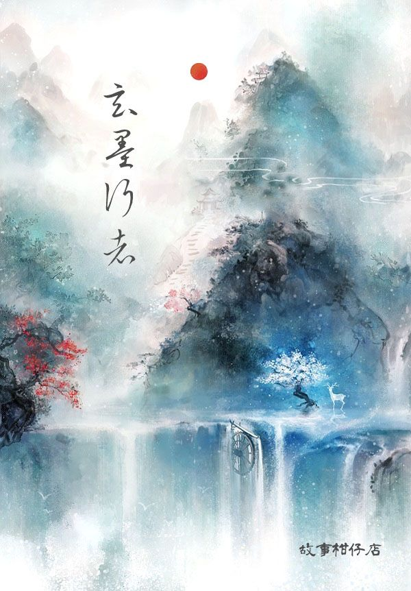
楔子
山色相連雲影深
星月無盡日破辰
隱者煉修藏落谷
墨心玄骨穿世行
天方破曉，朗朗晴空，星月尚未褪盡，第一道曙光穿越雲層直射烏拉孟山頂，染得山頭金光閃耀。
此處山勢險峻，一面斷崖正朝日出。眺望遠處，仍是峰峰相連的高山。山的皮膚覆著石礫沙土，偶有翠綠寒原自沙土間鑽出零星點綴，恐怕連野鷹都鮮少駐足。然而，除了呼呼風聲，空氣中還隱約傳來流暢如河的低低誦念聲。
山的頂端，奇岩怪石堆疊成一座孤峰，靜靜矗立在天幕之下。一整群圓柏蜿蜒著樹梢，頂著雲朵似的圓蓬綠葉，層層疊疊扎緊地表，林中又忽見一澄澈如鏡的小湖，倒映著枝葉橫生的晴空。而那奇異的聲響，便是從那被圓柏森林包圍的孤峰傳來的。
湖面忽然漾出波紋，只見一名身穿卡其麻衫，身形碩壯的少年，正小心翼翼踏著湖面上的石頭。一度腳底打滑，他搖擺雙手力求平衡，嘴巴倒是閉得緊緊，深怕發出任何聲響。
「嘿咻！」好不容易從石頭跳上岸邊，少年昂首挺胸敞開雙手，像完成一場了不得的演出。
沒有掌聲，他仍陶醉兩秒，隨即警覺地回頭望望，躡手躡腳踩過滑坡，一溜煙就到了斷崖邊。
一踩空，可就是萬丈深淵，少年卻面無懼色，蹲在崖邊像在想著些什麼。呼呼的風吹開了他麻衫領口，露出黝黑胸膛，脖頸掛著一枚藍得像從海底偷來的玉髓。
他一頭波浪捲髮飄揚在風中，柔軟得像隨浪搖曳的海草。
「我才不要上什麼早課咧，天氣這麼好。」少年嘟囔，眨眼間斷崖沒了他蹤影。
原來他翻身下崖，雙手緊攀突起岩塊，雙腿開如弓，如履平地踩著預先釘在岩壁裡的木樁，一步一根，很迅速的往下爬去。底下是幽不見底的深壑，他早就想好，往右斜斜爬去，會遇到一群垂直於峭壁的老樹，屆時再循樹躍上小道，準能在午時前抵達山腳。
沒注意到有根木樁顏色特別深，少年仍一腳踏了上去。未料木樁竟凹陷一個洞，暗藏裡頭的木銬眼見就像鯊魚的嘴，立刻就要咬上少年腳踝。
「哼！雕蟲小技。」木銬闔上之前，少年迅速抽起腿，旋身踩上另一根木樁。現在他可是背對岩壁，面向遠處山嵐間忽隱忽現的奇峰。還來不及讚嘆眼前美景，他踩著的、四周的木樁竟岔出數條木刺，東西南北參差錯落成一個木籠，十分湊巧地將少年困在裡頭。
「肯定是大曲和虹月幹的好事。」少年不慌不忙，雙手抱胸坐定下來，仰起頭看向崖邊。
果然，崖邊出現一男一女，正往下探頭探腦。
「拾哥哥，沒事吧？」同樣身穿素麻長衫的女孩將雙手圈在嘴邊，憂心問道。一陣風吹開擋住她左臉的髮絲，露出眼周整片青色胎記。
「還問？！趕緊讓我上去啊！」少年嚷著。
戴著金絲邊眼鏡的清瘦少年垂下繩索勾住木籠，另一頭便繫在像水車似的木軸上。兩人根本不必費力，受力木軸卡拉拉轉動，便緩緩拉起木籠。
捲髮少年一被拉上崖邊，立刻跳出木籠嚷：「喂！學機關術，可不是讓你們用來對付自己人的啊！」
「誰叫你又要偷溜，大師伯要生氣了。」虹月低下頭，深怕長髮又被吹起。
「快進去吧，耽誤了這麼久，課要上不完了。」清瘦的大曲轉身逕自往圓柏森林走去。
捲髮少年奔上去一跳，勾住大曲脖子，粗聲笑道：「不愧是大師伯的傳人呢，用功！認真！勤懇！」
「啪！」下一秒，捲髮少年已被狠狠摔在地上，大曲拍拍身上灰塵，推了下眼鏡，又往前走。
「起來啦！」虹月死拖活拉起捲髮少年，兩人嘻嘻哈哈跟在大曲背後，繞過了林中湖，往孤峰長驅直入。
－－－－－
#新連載依舊兩天一篇每晚準時六點半喔
#請人客多多指教
#記得去各大書店買我們的書故事柑仔店哩
玄墨行者．學道（二）

☯一章 學道（二）☯
孤峰腳下，是一面高聳石壁，卻突兀鑲著約四米高的厚實木牆。深褐色木紋上挨擠著細密年輪，遠看倒像一張張吶喊著的嘴。
木牆沒有閂，也沒有鎖頭。大曲隨手拔起幾根雜草，搓成一股草莖，往木板與地面的接縫處伸進去，將添了韌性的草莖往木牆底探去，摸索一下才準確插進一枚小洞。
木牆原來不是牆，而是一扇門，寂靜無聲緩緩升起。
「還是大曲厲害，不像我撓半天還找不到開關。」捲髮少年雙手比出大拇指。
大曲面不改色，視線隨著木牆上升。捲髮少年自討沒趣，嘀咕著：「不就是扇門嘛，搞得機關重重。」
虹月扯了下他的衣袖，示意他安靜。木牆已升至頂點，才知孤峰內別有洞天。映入眼簾的是一片長形空地，頂上一道細長瀑布垂直落下，恰好將空地分為對稱兩半，再往前望去，又是一整面灰白色石牆。
大曲一行人倒退繞行瀑布三圈，再倒退踏進左半邊廂房。中央擺著個香爐，四周散落幾個蕎麥彀蒲團。橫生藤蔓爬走側邊石壁，織成一個個格子。格子裡各自放著木製的小型連弩車、投石器、轉射機等器械模型。
捲髮少年拿起一部藉車把玩，說：「大曲，這是你改良的？一天到晚做這，不嫌煩哪？」
「拾兒，說過幾次了，怎麼老是對你師哥沒大沒小？」
低沈如深潭的聲音冷不防從身後傳來，被點名的拾兒一抖，藉車竟滾出手心。
幸虧虹月眼明手快，立刻勾起腳掌，模型就這麼安穩地落在腳踝上。她腿使一巧勁，藉車朝空中畫了個圓弧，物歸原位。
大曲連忙作揖，喊了聲師父；虹月和拾兒連忙跟進，喊了聲大師伯。
「虹月，挺機靈的。啊？」聲若潭水的玄天樞拍拍大曲的肩，逕自坐定正對香爐的蒲團，眼神始終沒有離開手中書卷。
「大師伯，虹月不敢。」她紅著臉，急忙坐下，大曲和拾兒則分踞她的兩側。
天樞一頭及肩黑髮，唯兩鬢及鬍髭雪白，身穿一襲墨黑長袍，襯上他一張毫無血色的瘦臉，就連指甲也是蒼白的，整個人看來無色無彩。僅那一對琥珀色眼珠，透著威勢。
「早課遲到，想來《神異術》都背得爛熟了？」天樞捧書沈吟一會，骨爪般的手伸進香爐，掬起一把香灰猛然灑向空中。
白茫茫煙塵裡竟飛出一隻大鳥，額前、胸前及兩翼皆有神秘印記，它噗撲拍翅，眼見就要啄向他們。
「北海鳥妖，其高千呎，頭紋曰風、胸紋曰林、左翼紋曰火、右翼紋曰山。喜魚厭畜，翅羽無堅不摧，唯尾翼懼火，尤其香火。」大曲看著香爐，連珠砲念出一大串。說也奇怪，大鳥就這麼消失了。
又一把香灰灑出，這次騰空冒出的是一衣著襤褸的人形，卻長著虎爪，露出尖牙直撲而來。虹月眼睛眨也不眨，朗聲念道：「西荒之中有人焉，長短如人，著敗衣，手虎爪，名獏㺔。伺人獨行，輒食人腦。或舌出盤地丈餘，人先聞聲，燒大石以投其舌，乃氣絕而死。」
天樞勉為其難點點頭，沉聲問：「拾兒，怎麼你都沒反應？嫌題目太簡單？」
「我沒背啊。」拾兒朗聲說，突然意識自己態度不妥，搔搔頭，囁嚅道：「《神異術》不過就是本動物百科，背了沒意思。」
「沒意思？」天樞維持沈穩聲調，「你師父沒教你，《神異術》是我們玄墨行者的立族經典嗎？」
「師父沒讓我背書呀！他說世間萬物，非得親自走一遭不可。」
提起老三玄天璣，拾兒反倒理直氣壯起來，虹月都要把他的鞋踩破了也攔不住那張嘴。
「那好。」天樞的臉氣又更蒼白了些，大曲連忙向前想安撫，卻遭師父拂袖揮開。
天樞旋身站起，黑袍順風張揚起來，如一筆未完的水墨，捺在他身後的石牆上。
玄墨行者．學道（三）
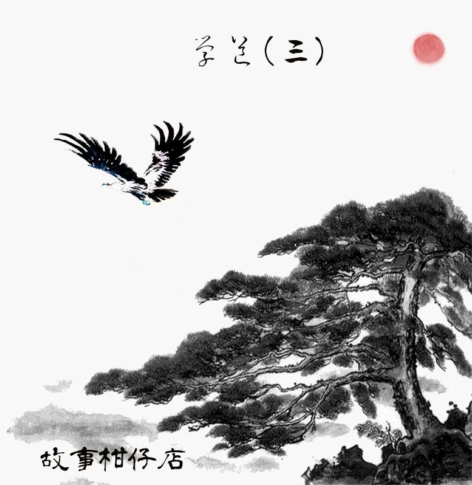
那一筆水墨，混沌生風。天樞合掌，枯瘦手指織結成印，忽而伸出右掌朝前一刺，石牆竟如漩渦般從中勻出一個容一人通過的洞。天樞大步跨入洞，手一揮，石洞隨即關起，將拾兒三人擋在牆外。
擋在天樞眼前的，是一道從天而降的瀑布。稻殼鋪成了一張大毯，綿延在他與瀑布之間。
稻殼攏出大大小小的殼渦，錯落無致也有致，飄著淡淡清香。天樞端起一口氣，心無旁騖，腳尖深思熟慮前進，左旋，後退，再前進。踩過的渦發出光，連成一支閃閃發亮的勺子，同時間，嘩嘩激流的瀑布如簾幕般朝兩旁拉開，待天樞入幕，水門頃刻恢復原狀。
那是一個寬敞無比的空間，兩側各有一廂房，盡頭石壁面附著畫像，雖已斑駁剝落，圖樣仍依稀可見：一名白眉者與佝僂者舉棋對弈，旁邊有頭牛正趴伏歇息。
石壁前有一長方木桌，案上擺了幾本書，一座插著三柱清香的小銅鼎。
天樞燃香，拿起龍啣雙珠木手爐，盛接瀑水，舉至眉前，低低誦念。
如砂礫般無情的誦念聲軋然而止，天樞擺回手爐，取走案上書籍。
「那小兒又要受罰啦？」
幽幽的，如古鐘般的蒼老聲音從右側廂房傳出。
「沒的事。讓他學學尊師重道罷了。」天樞冷冷答道。
「何謂『道』？如何重之？學得來的，稱得上是『道』嗎？」那蒼老聲音嘶啞地笑了起來，笑聲迴盪在空闊石洞，聽來像野鷹的呼喚。
天樞不答，逕自將書揣進懷中，循原路出水門，過石門，回到外院。卻見大曲正檢視著藉車模型，拾兒歪倒蒲團呼呼大睡，虹月急著喚他。
「啪！」不等清醒，三本書就這麼摔在拾兒臉上，他驚醒彈起，困惑地翻著滿佈蟲蛀水漬的書嘀咕：「《《玄墨宗譜》……這是什麼？」
「看來忘得很徹底呢。」天樞冷笑，一口氣噴得鬍髭翻動，「明日午時，進內堂罰抄十遍。」
說完，便逕自走出石洞，大曲見狀立刻跟了上去，師徒倆一深一淺身影消失在圓柏森林中。
「這下好了，你真的惹火大師伯。」虹月理理額前髮絲，深怕暴露佈著胎記的左臉。
「叫我寫我就寫呀？他又不是我師父。」
「三師伯不知何時才回來，你還是聽話點好。」
拾兒看著書出了神，問：「妳讀過這本《玄墨宗譜》嗎？」
「有啊。」虹月手撐著線條腴潤的下巴，「我們很小的時候，不是學過嗎？好像是二師伯教我們念的，記載著玄墨一族的來歷呀。你忘了？」
「是嗎？」拾兒突然眼睛亮了，揀起書翻了翻，「我都忘了。但我還記得七年前十二月十六日，妳跌進湖裡，哈哈！」
「你少無聊了。」見到拾兒神色，虹月明白他起了好奇心，隨即又推他一把：「你趕緊抄去，看完了內容，記得告訴我，否則我也忘得差不多。」
「我這人從不獨佔好處的。」拾兒下意識把玩脖子上的藍玉髓，「既然我們都是玄墨傳人，當然得一起承擔！別說我欺負妳，我抄五遍，妳抄五遍。行不？」
－－－－－
#新連載依舊兩天一篇每晚準時六點半喔
#請人客多多指教
#記得去各大書店買我們的書故事柑仔店哩
玄墨行者．學道（四）
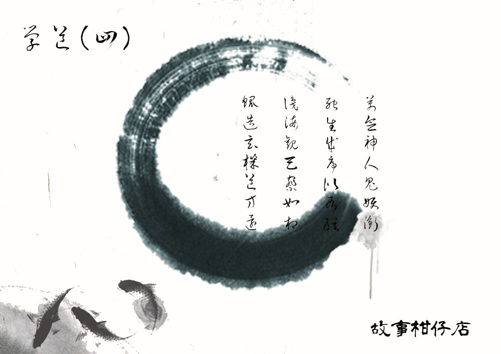
「戰國時，天下學者不歸楊則歸墨，尤以墨者行俠天下，無人不知，其機關智識左右大勢，或言秦國弓弩之巧、刀劍之韌、盔甲之精，皆出自秦中墨者，助始皇數十年間平定天下。
秦浩蕩統一，墨者卻銷聲匿跡，世人不解，或謂秦人寡情，兔死狗烹，已趕盡殺絕墨者，以避其知其器落入外人之手；或說墨者認天下既定，卸甲歸於士工農中，不問世事、不操舊業。
其實不然。
墨家末位鉅子遁世前，為聚他國餘下墨者，與三五從者疾行山間，欲會於函谷關，途中憩於一亭，遇兩老弈棋，各執黑白，黑棋者面貌枯槁，身形痀僂；白棋者白眉飄飄，仙骨凜然。
鉅子在旁觀之，黑白棋子竟忽而成馬，忽而成士，相互廝殺，鉅子迷而入局，乍見自身站在棋盤正中，兩棋殺將過來，刀劍加身之際，黑白棋竟又化為各式妖魔，將盤中鉅子食而殆盡。
半响之後，鉅子恍惚醒來，三五從者皆倒地昏睡，兩老在旁坐而待之，白眉者見鉅子醒，言：「天下分合，亂而無道，非汝一人一派可治。」
痀僂者哀惜而言：「哀哉我墨者，救遍人世，卻無智光可見真實。」
鉅子欲言，白眉者先道之：「棋盤中事，為天下亂根所在。人心生妖鬼，而妖鬼又亂人心。人心之災，儒道或可正之，但妖鬼之禍，唯有墨者能平。今日見之，實為翟、吾相託，望墨者能續而匡正天下。」
鉅子不解欲問，痀僂者又先言：「今吾倆將《渾天機關書》、《神異術》與你，望你繼我治世博愛之業。」
白眉者又云：「吾另有三事告汝，務必守之。一汝回之後，請潛於山林暗處，廣集有志之士，煉之焠之，後以七人為隊駐於各處，以維三界平和。二、派中人士不得向外人道內部之事、之術、之人，務必律己甚嚴，方可不負所託。」
「至於三，吾留一詩給汝等，慢慢參透：
萬念神人妖鬼銜
死生成＊＊＊
＊＊觀天察如相
＊＊＊＊＊＊＊」
言畢，白眉者、痀僂者起身緩步出亭，白眉者騎上隻獨角青牛，痀僂者牽之，兩老隱沒山嵐亂石之間，不知所蹤。」
「哇，搞什麼啊？最重要的詩居然給污損了！」拾兒一會兒舉起書朝光，一會兒瞇起單隻眼湊近了看，最後才頹喪地躺倒成大字形，一頭海草般的捲髮漫了開來。
他手指無意識翻弄著書頁，眼睛望著石壁斑駁的畫像，有種淤塞突然被打通的感覺。原來這壁畫，講的就是《玄墨宗譜》第一頁的故事嘛！看來玄墨行者不只是隱士，似乎大有來頭哩。
「嘿，無知小兒，現在你才知道呀。」右側廂房傳出夾沙帶石的蒼老聲音，案上燭火搖曳起來，照得壁畫的白眉及痀僂晃動起來。
「您和我說話嗎？」拾兒四處張望，不免有些興奮。他的確知道廂房裡蒙叟的存在，但他從未親眼見過，更別提交談。
「我是瞎了，沒聾。這內堂有第三人，我聽不出來？」蒙叟尖細起嗓子，揶揄乾笑。
「玄墨一族，真那麼有來歷嗎？那首詩寫著啥？污損了看不到呀！」
「你不知道的事可多了，急什麼？」蒙叟嘿笑，又提醒道，「時辰快到了，你罰寫完了嗎？」
「糟！」拾兒瞥了一眼燒至三分之一的香，趕緊坐直身子振筆疾書，想著這筆都快沒水了，改天得央師父再從山下帶些回來。他喜歡一支八元的油性原子筆，才不像虹月，還指定要什麼擦擦筆，害師父多跑了幾間店才找到。
筆尖滑過紙頁的聲響，時而像微風吹過竹林，時而像箭矢射過晴空，有時又陡然靜默，再突然一陣狂風刮起落葉。這小兒的心可真是紛亂如浮萍啊。蒙叟心想。
香才矮了那麼幾公釐呢，蒙叟側耳傾聽，廂房門外傳來平穩的打呼聲，像海潮一般的規律。
「鯤造玄機道方還哪……」廂房中的蒙叟伸出枯枝手指，撫著被兩個木環包圍的青銅簍雕銅球，瞇起一對灰白混濁的瞳仁，泛起轉瞬即逝的笑意。
－－－－－
#新連載依舊兩天一篇每晚準時六點半喔
#請人客多多指教
#記得去各大書店買我們的書故事柑仔店哩
玄墨行者．學道（五）

焚盤香，盛瀑水，敬天地，謝八方。內堂裡，玄墨七者席地而坐成圈。氣氛肅穆，壁畫兩老者倒是閒情依舊。
老大天樞的右手邊分別是老二玄天璇、老三玄天璣、老四玄天權；左手邊則是老五玄玉衡、老六玄開陽、老七玄瑤光。大曲則站在天樞身後。
同屬玄字輩，七人各有千秋，風情萬種。
「今日召開會議，還讓老六、老七特地返山，辛苦了。」天樞率先開口。其實天璣也是凌晨才趕回來的，卻不小心被忘記了。
開陽、瑤光最年輕也最利索，相較師兄，他們總是花比較多時間在山下打打零工，賺取門派所需。他倆裝扮也明顯不同，穿著簡單t-shirt，瑤光還套了件膝蓋破洞的牛仔褲。會議起始，照例由他倆報告新一季業績。
瑤光有一對深邃細長的眼睛，頭髮剃得短短，他一笑，能泯滅世間所有煩惱。「你們知道現在水電工多缺嗎？多虧我們墨者擅長修理、造機關，別說下一季，下下一季的開銷，我也賺足了。」
「這麼厲害，待會去把後頭雞籠補一補。」老五玉衡是位婦人，梳了個鬆鬆的髻，插著支琥珀步搖髮簪，一張臉潤白如玉，眼角爬滿細碎皺紋。
「小事，交給我來不就得了？」開陽笑道。
「不瞞各位師兄，我近期還兼修手機賺外快。」瑤光從背包掏出七部大小不一的手機，「這是客人淘汰的，我全修好了，還綁了兩年約。咱們一人一支，聯繫多方便呀。」
瑤光拿起手機示範line的用法，大曲小心翼翼探頭探腦，就怕被天樞發現自己的好奇，老二天璇硬是撇開頭：「現代科技，哪比得上祖師智慧。」
開陽接話了：「這好哇！否則每次都得用木鳶傳信，最少也得等上三天。」他縮縮脖子，「而且，在山下給人看見了木鳶，有點難為情啊。」
「各位師兄就收下吧，學著玩玩也好。」瑤光搔搔頭，「不過咱們這沒基地台，得到湖外的斷崖邊才收得到訊號，小心可別跌下去啦。」
「噗哧！」保持沈默的老四天權終於忍俊不住，隨即吃了天樞瞟來的冷冷一眼，趕緊又斂起笑容。
「行了、行了，到此為止。今日開會，有另一要事。」天樞收起其中一部手機，其他人紛紛跟進，坐挺了身子洗耳恭聽。
天樞盤腿，雙掌曲鬆置於膝頭，眼皮低垂，氣凝如石，唯鬍髭微微掀動。
「十七年前，北斗七星東南方憑空出現一顆青色妖星，三天後隨即爆發人妖大戰，我們平亂之後，妖星隨之消弱。但近日妖星又復發光，旁邊還多了顆小妖星。天現異象，我憂煩人間又現大亂，特地召集諸位商量對策。」
突如其來的消息，像一隻蟲子爬過腳邊，引起了不出聲的騷動。天璇挑起一邊眉毛，冷哼一聲，「今日妖星，恐怕是當年斬草未除的根。」說著，眼睛便轉向天璣。
天璣身著一襲深苔色長袍，手肘、胸口、膝蓋處舊得磨出泛白，整個人瘦得仙風道骨，兩道長長的八字鬍跟著飄飄然。默不作聲，他撫摳指尖的繭，在眾師兄弟移開眼光的前一秒開了口：
「這次下山，到岡山及新莊收了白猿妖及黑狗妖，已鎖進妖庫。無人傷亡，也沒有引起騷動。」明知答得牛頭不對馬嘴，他仍一派淡漠，「以上是我的報告。聽說拾兒不受教，我去教訓他。」
說完，起身，像一曲滿佈苔蘚的河流。水門分開，他不顧身後氣得吹鬍子瞪眼睛的二師兄，走了出去。
出了石門，便見拾兒與虹月湊在一起，兩人把玩著藉車，你一言我一語：
「依我看，這軸承得加長一點，才能增強投射力道。」
「才怪。要是我就修短，盡可能縮小體積。」
天璣瞧著兩顆吵得興頭上的腦袋瓜，不自覺笑了，朗然出聲：「軸承長，適用遠距戰；軸承短，適用近距戰。你們倆都沒錯。」
兩顆腦袋瓜同時轉了過來，拾兒咧開嘴大喊：「師父，您回來啦！」
天璣故意繃著嘴角，問：「聽說你頂撞你大師伯了？」
拾兒嘟囔：「話也傳太快了。況且，哪有這麼嚴重。」
虹月岔開話題：「三師伯，您這次下山收妖還順利嗎？」
「順利或不順利，都是劫。」天璣從懷裡掏出一包墨黑色方塊物體，遞給虹月，「為師這次吃到的新奇玩意，布朗尼，嚐嚐。」
一個閃神，那包布朗尼已到拾兒手上，與虹月兩人吃得嘴角沾墨，津津有味。
「師父，這個比上次您帶回來的蛋塔好吃！」
「蛋塔？」天璣蹙起眉，沈思了會，「經你一說，這回下山，滿街的蛋塔店倒是都消失了。」
－－－－－
#新連載依舊兩天一篇每晚準時六點半喔
#請人客多多指教
#記得去各大書店買我們的書故事柑仔店哩
玄墨行者．學道（六）
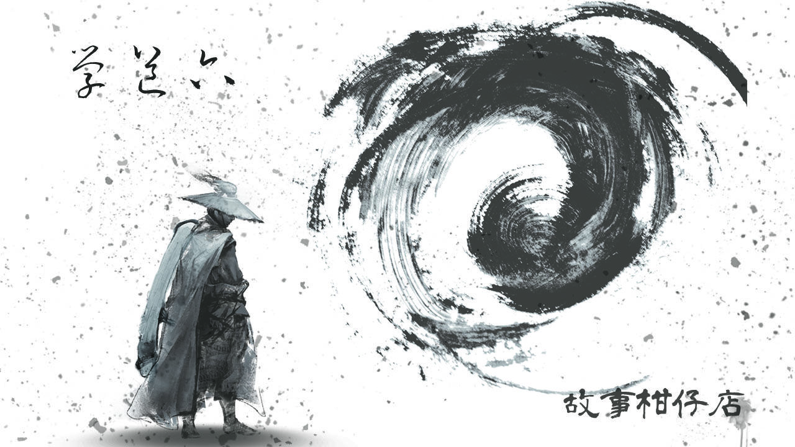
當空皓月升至西北四十五度角，便悄悄映上湖面。上天下水，兩方有月，盈盈缺缺。
漆黑湖面像落下了顆銀球，映得湖邊林子微微明亮，也照清了湖邊人影。
天璣端坐，捏著根圓柏樹枝充當釣竿，筆直釣線沉入水中，探進黑暗湖心。他最喜歡這個時辰，雙月伴影隻。
深夜的湖邊，青草混雜著露水，幽幽散發枯敗又蓬勃的氣味。北斗七星盡責高掛天際，不遠處一大一小妖星，青藍光芒一明一滅。
所以他是如此敬畏自然。凡間任何風吹草動，天地總是先有了預兆。
想不到那場妖界大戰已經過了十七年，原來日子太平也不過一晃眼。湖面忽有魚身驚跳，天璣心口一陣抽痛。下個月，拾兒就滿十八歲，那個秘密的承諾即將到期。看來，傳位之日並不遠了。
十七年前，人族與妖族展開一場空前大戰，土地龜裂，樓房攔腰折斷，海潮倒退，日月無光，是百年來最大劫難。
天璣竟湊巧的錯過那一役。
大戰前幾天，接獲蒙叟指示，天璣動身下山收妖。行經據聞妖魅出沒的海邊，卻異常風平浪靜，海風中隱隱約約傳來啼哭。循聲而去，竟有一名強褓中的嬰孩躺臥海蝕洞，有著一頭柔軟捲髮，兩隻胖乎乎小手把玩著胸口佩戴的藍玉髓。
刷白海潮重重拍打，碎成一地浪沫，嬰孩不驚不懼，對著天璣咯咯笑。第一眼，直覺告訴他，這孩子擔得起玄墨之名。
門派不是成群結黨，不過是命運相仿之人的匯集。玄墨一門，無血脈，無姻親。入門者，非孤辰即寡宿。孤獨，也是每個行者尋找傳人的首要條件。
愈隨意的名字，才能躲過天災人禍，天璣遂將孩子取名「拾兒」。上山歸峰，跪在內堂壁畫前，他高舉嬰孩，焚香祭禱三天三夜。祖師准了這孩子入門。
孩子入了門，他才隱約知道，撿到拾兒的那一天，大師兄率著眾師弟下山平亂，助人間恢復平靜。可是對於那一役，大夥卻三緘其口不願多談。
直到後來，他才從別人口中知道了當天情形。也因為知道了，他許下了那個秘密的承諾。如今，期限就在眼前。
天璣微微扯動釣竿，扯破了平靜湖面，月亮、北斗、妖星都給攪糊成一團。
沒有魚上鉤，天璣仰頭環視參天森林，呼出一口長長的氣，兩撇八字鬍飄揚起來。
其實他還是喜歡待在山上。偏偏，蒙叟最常將下山除妖的任務交付予他。或許這樣也好，可以避掉一些事情。
然而有些事是避不掉的。湖面恢復了寧靜，月亮、北斗及妖星都歸位了。
草地傳來揉捻的細碎聲響，伴隨著一股曇花清香。天璣頭也不回，問：「玉衡，還沒睡？」
黑暗中浮現出老五玉衡那張細長白臉，微微笑了。「夜半三更釣魚，只有三哥你有這種興致。」
她攏攏掛在後腦勺的髻，琥珀步搖迎風輕舞，盪出一波香氣，「這兒有魚？」
天璣答：「必須有。」
「釣了幾隻？」
「沒有。」天璣盯著釣線，「如此一來，湖裡永遠都有魚。」
「你從小就愛說些怪道理。」玉衡微微哼氣，卻不是真正的輕蔑，反而帶著笑意。
「妳也是自小就愛從背後嚇人。」天璣說道，故意繃著臉斜睨玉衡一眼。
「你在山下久了，還以為小時候的事，你忘得差不多。」
「下了山，山裡的記憶反倒清明。」
「什麼時候再下山？」玉衡問。
「蒙叟沒說。」
「喔。」玉衡抬頭，「呀！果真大小妖星都出現啦，恐怕又要出亂子。」
「其實多數時候，妖怪也很無奈。」
「這我不是不明白。」玉衡將雙臂打直撐在身後，「但收妖是我們的天命。」
「收，也不能收得不明不白。」
天璣說完，玉衡沉默了一會，空氣中只剩那種空寂的聲音。
「拾兒快成年了吧？」玉衡不喜歡忍受空寂。
「下個月。」天璣難得反問，「虹月呢？」
「還得兩年。」玉衡苦笑，「栽個傳人，跟養孩子沒兩樣。」
「妳將虹月教得很好。」天璣由衷喜歡這個伶俐又禮貌的孩子，他有預感，將來她能為拾兒使上力。即使這想法有點自私。
雖然，天璣早已從別人口中得知十七年前的那天發生了什麼事，但他今晚突然有股衝動，希望從同門裡聽見不一樣的答案。
「玉衡，那場妖界大戰，我們玄墨一門究竟做了什麼？」
忽有魚破湖躍起，驚擾了天璣的心。一問出口，雖似衝動，他也隨即明瞭，絕不是突然，他只是壓抑了太久太久。
－－－－－
#新連載依舊兩天一篇每晚準時六點半喔
#請人客多多指教
#記得去各大書店買我們的書故事柑仔店哩
玄墨行者．學道（七）
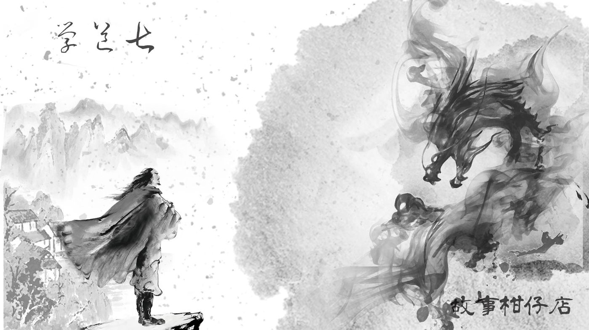
「好端端的，問這陳年往事做什麼？」玉衡的臉僵住了，「時候不早，去睡吧。明兒還得教孩子武術。」
「我理當知道。」天璣握著釣竿的手一動不動。玉衡最怕他這樣，整個人像凝滯的風。從小她就不是他的對手，沒想到，老了，也一樣。
那段記憶，玉衡也鮮少想起，可能是不願想，可能是遺忘了比較好過。然而當她抬頭望見那輪明月，十七年前的畫面一瞬間躍然眼前。
原來玄墨一門使命收妖，卻不是見妖收妖，逢怪打怪，全得遵從蒙叟指示。
蒙叟房中幾乎半個人高的青銅簍雕銅球，名作「預天儀」，可率先預知災禍。預天儀靈象，唯蒙叟可解，再由他指派適當人選至何處收何妖。
蒙叟何許人，無人知曉，只知他是總會派來的。每一屆蒙叟沒有姓名，皆是瞎眼老人，死了一個，便再派來一個新的。蒙叟是總會與玄墨七者間唯一的橋樑，包括掌門人玄天樞，也沒有主動聯繫總會的資格。
生死有命，時辰在天。壞就壞在這。十七年前，天璣收到指示下山收妖的隔一天，蒙叟便死在預天儀旁。
這並不意外，但令玄墨行者憂心的是，預天儀不斷震動搖晃，肯定將有災禍降臨。
預天儀震了一天一夜，震幅愈來愈大，整座廂房都隨著搖晃。天樞徹夜未眠，忍至雞啼，卻未見總會派來新任蒙叟。憂心災禍擴大的他，只得按靈象推估可能方位。
當時，天璣早下山收妖了，開陽及瑤光也還沒回來，天樞便率著天璇、天權、玉衡緊急下山，只有不到三歲的大曲留守孤峰。
為時已晚。
這是玉衡隨著師兄穿越樹林，踏過山稜來到平地的第一個想法。
入玄墨一門近三十年，她未曾見過這般人間。
地面龜裂，樓房如曬乾脆化的海綿般頹頃崩塌；遠山位移，土石滾滾崩落，老樹拔根翻起不支倒地；沿海倒灌，捲沒農舍田地，溪河暴漲，沖垮屋房地基。
土礫堆埋著無數死傷，風聲聽起來都像悲鳴，而人們的嚎泣又奏成了風聲。
這不是一般天災人禍。玄墨行者的眼中，看見截然不同的人間。
地面裂隙冒出汩汩濁黑妖氣直衝天際，海中精怪翻騰捲湧大浪；猿妖掛著樹枝擺盪，一甩就折斷一株百年老樹；貓鬼及狗妖扭打成團，所經之處皆成焦土；耳朵長出翅膀的首級盤旋空中，發出尖聲獰笑。
為時已晚，但仍須亡羊補牢。
玄墨四人在山坡林間目睹此幕，大感驚駭，實在是未曾見過這等百妖橫行，群魔亂舞，就連天樞也啞口無言。
「師兄，這怎麼辦才好？」天璇問道。
「禍根難尋。妖物全滅，才能止血。」天樞怔怔望著前方答道。
「全滅？這豈不有違人妖界和平協議嗎？況且，破壞了天地平衡，有可能引來更大禍害！」玉衡急急說。
「今日妖物先將人間搞得寸草不生，我們還跟他們講和平？」天樞從懷中掏出兩個蝴蝶造型的薄木片，吹了口氣後灑向空中，木片竟就這麼分頭翩翩飛走，「在老六、老七收到木鳶來會合之前，我們必須先行動。」
「大師兄，我認為這樣不妥……」玉衡話還沒講完，便被天權扯住袖子，暗示她別做困獸之鬥。
「除了全滅妖物，還有其他方法可以阻止這場百年災禍？！」最挺天樞的天璇破口大罵，「玄墨一門保的是人，不是妖！」
爭吵不休之中，天樞默默舉起黑色令旗朝山下走去，「是我玄墨一門，就跟上。」
天璇當然是亦步亦趨跟上了，天權則拽著玉衡落在後頭。
「跟大師兄對著幹，妳是何苦？」眉間有顆大痣的天權悄聲碎念，但玉衡並不理他，哼了一聲，不情不願拖著步子。
只見天樞將令旗插在背上，與天璇二人率先騰空一躍進混亂之中。天樞抽出銅錢七星劍，橫向一揮，同時斬掉貓首狗頭，被斬牲畜瞬間化為一道輕煙鑽入七星劍的銅錢孔。
天璇口中唸道：「入冥冥，氣佈道，氣通神，奸邪賊鬼皆消亡，視我者盲，聽我者聾！」語畢，搖起三清鈴，響天徹地震邪祟。
鈴聲滴溜傳進滿天亂舞的飛顱妖耳中，他們止住獰笑，痛苦哀嚎直至潰散成霧，被收進三清鈴內，遠處林間逃竄的猿妖一被鈴聲干擾，不由得手鬆腳滑，紛紛摔在岩石上。
天權見狀，隨即敲起腰間的喚雷鼓，一聲、兩聲、三聲，宛如雷電降世，山林晃悠。明明天地乾燥，但眾妖卻紛紛抱頭亂竄，宛如被暴風雨狠狠擊打。
趁著眾妖失去防備，玉衡抽出髮間步搖射向空中，散成滿天針雨，正準備朝眾妖扎去。忽然一陣無形之力將針雨彈了回來，玉衡趕緊全數收回步搖，避免被傷。
停下動作的玄墨行者望向遙遠遙遠的彼方，海岸掀起滔天巨浪，浪叢聚為一道海藍妖氣，蜿蜒直衝而來。一陣天搖地動，水霧散去，驚見一名矮小男人擋在眼前。
矮小男人下巴生出許多條觸鬚，兩邊耳朵呈大片鋸齒扇形，遠看像極了翅膀，細小眼睛長在太陽穴邊，鼻梁扁平，長相十分怪異。
「來者何人？」天樞舉起令旗指著對方。
「在下鯤翁，有一事參詳。」他眨眨太陽穴邊的眼睛，而他身後的盆地依舊烽火連天。
－－－－－
#新連載依舊兩天一篇每晚準時六點半喔
#請人客多多指教
#記得去各大書店買我們的書故事柑仔店哩
玄墨行者．學道（八）
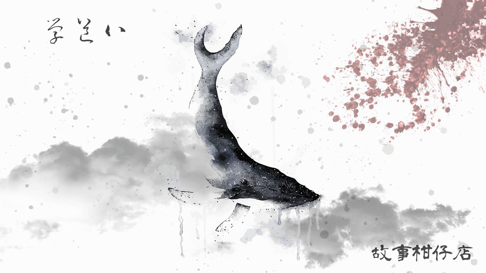
「在下鯤翁，有一事參詳。」
自稱鯤翁的男人十分矮小，還得仰頭才能對上玄墨行者眼神，但他面無懼色，自有一派風調雨順的威嚴。
「鯤精就鯤精，自稱什麼鯤翁。」天樞斜睨來者一眼，收起七星劍，昂起下巴：「說。」
鯤翁點點頭，禮貌性微笑一下，叨絮說明，原來這次大亂的原委，不過是金雞又啄地牛逗著玩，玩過頭。往昔地牛翻個身，驚嚇多於實際傷亡。誰知這次金雞玩得忘記分寸，惹得地牛動怒，猛力衝撞地層山脈。
這一撞，把各大妖怪聚落都給震得雞飛狗跳，有些圖謀不軌的份子便趁機作亂，才釀成今日大禍。
「所以，你想參詳何事？」天樞依舊冷冷回應。
「妖界秩序是由我們鯤翁兄弟維護的，今日禍亂，我有責任懲處作亂份子，但也有義務保護多數妖族。」鯤翁說道。
「你是在求我們手下留情？」天璇冷哼一聲。
「不如說這是個提議。若我兄弟與眾妖真要與你玄墨衝突，就算齊聚你師兄弟七人，你們也不一定有勝算吧？不如就聽我鯤老一言。」鯤翁不卑不亢，撫著下巴觸鬚說明，今天就由他出面調停，讓玄墨行者收服作亂份子，另一方面召集各大妖怪聚落長老見證，也順道訂下誓約，不再恣意危害人間。
如此一來，妖界不必被趕緊殺絕，但又可止息人間禍亂。
「大膽鯤妖，敢跟我們談條件？今日不斬草除根，禍害遺千年！」天璇舉起三清鈴作勢要搖，卻被天樞制止了。
「老二，別太激動。」天樞打量鯤翁一會，說：「既然妖界之長鯤精都這麼說了。那好，何地調停？」
鯤翁伸出像鰭一般的手，指向沿海石岸：「那兒有個隘口，我將號令所有長老入內。但是，我有一個條件。」他眯起眼睛，打量著天樞，說：「只容你獨自前往，其他人不得靠近。」
天樞答：「行。」
「但我如何信得過你？」鯤翁問。
天樞沒有答話，忽地伸手抽出玉衡頭上的步搖，狠狠割下一綹自己的髮絲，雙手呈上。
鯤翁接過那束摻灰抹白的髮絲，鰭手隨即割下兩條觸鬚，交給天樞。
「兩個時辰後，我們再會。」說完，鯤翁突然一溜煙消失天際，遠方海面濺起朵朵浪花。
「師兄！怎麼可以跟妖族談條件？萬一他們得寸進尺……」天璇立刻嚷嚷起來，一張方臉氣得通紅，腮骨暴起。
天璇尚未說完，天樞便伸出手阻止，接著緩緩開口：「聚集各大妖族長老，豈不方便我們一網打盡？況且，方才若真與鯤精動起手來，憑你我幾人，恐怕還不是他的對手。」
「瞧那隘口，入口處如此狹窄，倘若我們在裡頭發動攻勢，妖怪們插翅也難飛。」天樞又說。
「大師兄，這樣不好吧？」這次，換天權忍不住出聲阻擋。
「天權、玉衡，你倆先搜山，確認沒有妖孽藏身處。」天樞無視抗議，轉頭對天璇說：「你見機行事吧。」
收受指令的天權及玉衡沒有說不的權力，只能目送大師兄及二師兄離開。兩人往山林深處搜去，一路上雖有妖氣殘留，但大致上已恢復平靜。
天權和玉衡沒有說話，耳邊僅剩風拂過林葉的沙沙聲，但他們的步伐卻相當一致，逐漸往隘口靠近。
「大師兄真會做這麼絕嗎？」玉衡忍不住問道。
「他這個人，妳是知道的。」天權抹汗，林間光線愈來愈弱，必須加快腳步。
「但他與鯤精互贈髮鬚立誓了呀！怎能違約？」
「他這個人，妳是知道的。」天權又重複了一次。只是這次，他說得很小聲，像說給自己聽。
太陽即將落入海平面那一刻，愈接近隘口，混濁妖氣便愈重，直撲而來。遠遠地，空氣中傳來一陣淒厲鈴響，天權兩人互看一眼，不約而同凌空躍起，踏石、踩樹、越坡，瞬間來到了隘口入處。
恨的氣味，怒的氣味，驚惶的氣味，咒詛的氣味，以及硫磺混艾草的氣味，混雜著血腥，形成一道無形結界。玉衡率先闖進洞穴，未料再見煉獄。
為時已晚。
這是她今日第二次出現這個念頭。
洞穴裡正中央躺著一隻奄奄一息的碩大鯨魚，四周妖屍遍佈，兩旁崖上布滿木機弩，各族長老無一倖免。
天樞瞅了玉衡一眼，隨即踩上鯨魚身軀，不顧左臂一彎傷口正汩汩湧出鮮血，高舉七星劍戮力戳進牠肥厚腹部。氣凝劍身，魚腹門戶洞開，流淌一地脂肪血水，漫過眾妖屍體。
天樞雙手探進腥臭魚腹，摸索一陣忽而扯出一大塊灰黑色臘狀物體，散發出陣陣臭味。他十分滿意：「不愧是萬年鯤精，這可是上好的香。」
「這是……方才的鯤精？」玉衡喃喃問道，不敢相信眼前所見。
天樞不答，只是環視滿地妖屍，舉起血跡斑斑的七星劍，下了今日最後一道命令：
「斬下眾妖首級，送返各大妖族聚落，告訴他們，這就是禍亂人間的下場。」
－－－－－
#新連載依舊兩天一篇每晚準時六點半喔
#請人客多多指教
#記得去各大書店買我們的書故事柑仔店哩
玄墨行者．學道（九）

魚又躍出湖面，撞破了一圓月影，尾鰭啪啪拍打，像極了鷹振翅的聲響。
「真的有魚呢。」玉衡多麼感謝這隻魚的出現。尤其在她說完那十七年前的往事之後。
其實她本來只想含混帶過，反正陳年破事，有什麼好斤斤計較。但不知怎麼的，望著滿天星斗，她就這麼一股腦地說完了，說清了，說盡了。
這輩子，她倒也算對天璣沒有任何隱瞞了。
只是說完才發現，天空裡那顆小妖星，原來最靠近北斗中的天璣星。
「老四倒是明眼人呢。平常什麼都不吱聲。」天璣逕自笑了，他真沒想到沈默寡言的天權，居然把大師兄天樞看得這麼透。
玉衡笑不出來，她曾經親臨過那樣的煉獄，而她又親見煉獄出自天樞與天璇之手。她仍然相信收妖是玄墨行者的天命，然而背信忘約又趕盡殺絕，不應該。
「早點睡吧。」天璣說道。天空依舊一片漆黑，原來一段過往這麼驚心動魄，卻連破曉也等不著。
不等玉衡，天璣便收了釣竿，往孤峰走去。沿途踩踏草葉的聲音，聽來多麼肅殺，就像方才聽聞的故事。
其實天璣並不意外，只是他沒想到故事的原貌比想像中醜惡。
他繞過孤峰，撥開蔓生草叢步下一條蜿蜒如蛇的小徑，立在一片參天樹林前，舉起雙手，低喝一聲：「開！」
纏綿林枝竟往兩旁倒去，現出兩排以細緻木樁鑲嵌而成的隔間，隔間裡關著形形色色的妖物：天上飛的、水裡游的、地上爬的、竊衣的、食人的、隻手遮天的，應有盡有。
妖物們見天璣進來，紛紛起了騷動。嚶嚶哭泣、激憤嘶鳴、刺耳獰笑、心神發狂的暴吼回盪在空中，揉成一首世間最令人不忍聽的旋律。
不久前被鎖進來的黑狗妖不斷狂吠，一邊向前衝撞，碰著了木樁，發亮的黑色毛皮便灼出一圈禿禿血痕。黑狗喲哀嚎著驚跳起來，瑟縮角落發出低吼。
這是鎮妖庫，鎖著玄墨行者收服的所有妖物，木樁已被施咒，若有意潛逃，必定落得魂飛魄散的下場。那些早就嘗過皮開肉綻滋味的妖物，都不敢輕舉妄動。
天璣望著那兩排鋪天蓋地彷彿看不見盡頭的隔間，面容哀戚，像是懺悔般地低語：「過去以為收了你們，天下太平。到頭來，竟是毀了大家的根。」
霎時間，所有的哭泣、低鳴、痛嚎，就像受了潮的塵埃一般沉了下來，無聲地落在天璣的腳邊。
月光淒清灑落山谷，就像每個再尋常不過的夜。
從那夜起，玉衡總有點避著天璣，可能是不願再多被問些什麼。天璣倒是自在得很，山上的日子，每日晨起教拾兒撥琴弄弦，驗收拾兒體術功夫，此外沒別的了。
最樂的是拾兒，他高興師父待在山上陪他，否則他都要怨了：明明玄墨有七者，怎麼偏偏蒙叟最常差師父下山收妖。
日子一天天過得像行雲流水，拾兒突然想起《玄墨宗譜》那首殘缺的詩，趁著出門挑水時，纏著天璣問個不停。
天璣不答，反而問：「拾兒，還有多久滿十八？」
「再一個月吧！」
「待你成年，就會收到這首詩。」
按照玄墨一門的習俗，傳人成年當天得經過成年禮的試驗，通過之後，才算真正有了承接師父名諱的資格。
不過，由於玄墨一門多是孤兒棄子，鮮少有確切出生日期，正確來說，成年禮都選在入門日進行。
三個傳人中，大曲年紀最大，唯獨他通過了成年禮，拾兒自然又要纏著他問東問西。
「成年當天有雞腿吃嗎？」
「那時大師伯有準備禮物給你嗎？」
「成年後你有去偷買菸嗎？」
面對這些提問，大曲一概冷處理，只是靜靜地溫書、抄寫功課，就當耳邊來了隻趕不走的蚊子。
「大曲，聽說成年禮當天就可以見到蒙叟了，他是個什麼樣的人啊？」
趕不走的蚊子，終究會叮上來的。大曲規律撇捺的字跡頓了一下，想了想，才又開始了下一劃。
「師兄，別老是問這麼沒營養的問題好不？」虹月在旁邊也不耐煩了。但並不是因為拾兒的多嘴，而是這段時間以來，三師伯似乎一日比一日消瘦了。人的血肉竟能萎縮得如此迅速嗎？
－－－－－
#新連載依舊兩天一篇每晚準時六點半喔
#請人客多多指教
#記得去各大書店買我們的書故事柑仔店哩
玄墨行者．學道（十）
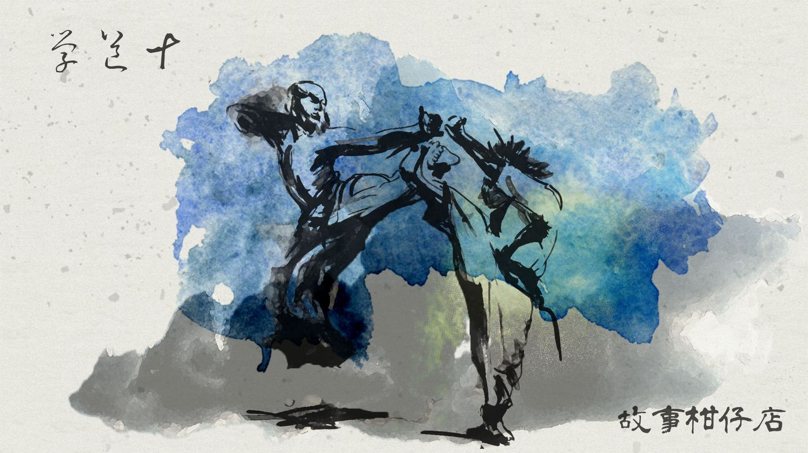
這一天，玄墨七者全到齊了，聚集在內堂裡，各自閒聊著，輕鬆中不時閃過一絲緊張。
這是玄墨一門的規矩。傳人成年禮當天，所有人都必須在場，見證傳人能否通過試煉，正式繼承師父衣缽。
「師兄，你們說，這拾兒能不能通過？」最滑溜的瑤光問大家，「要不來開個賭盤下注？」
「老七，這是何等大事，你也太不正經了。」天樞眼球一轉，一瞪，拾起話頭轉了彎，趁機訓話，「現在只有我和老三、老五有傳人，其他人也該認真找找了，否則玄墨一門豈不是要滅了？」
「大師兄，傳人不好找，您又不是不知道。天底下哪來這麼多孤兒棄子讓我們撿哪？」瑤光不怕被訓，笑嘻嘻，穿著破牛仔褲的長腿晃呀晃。
開陽像是說相聲似的接了下去：「就算收了個孩子進來，含辛茹苦養到十八，通不過成年禮，也只是白搭。」
此話一出，全場氣氛突然凝結。開陽立刻意識到自己說錯話，乖乖住嘴低下頭，卻沒躲過玉衡拋來的責備眼光。所有人都假裝沒聽到似的，理衣撥髮乾咳，就期望這一秒趕緊過去。
唯有天璇，雙手抱胸，扭過頭去。
這的確是個不該提起的話題。
其實天璇本也栽了個傳人。那孩子天性安分，卻跟了性急的天璇，做什麼事都畏畏縮縮。體術練不成、書背不好、機關術學得零零落落，就連吃飯也不敢飽。好不容易熬到成年禮那天，說什麼都不肯進廂房見蒙叟，哭著說他根本不想收妖。
能怎麼辦，難道把他架進去不成？天璇搖搖頭，那孩子的成年禮是脫門下山，從此音訊杳然。
無論怎麼說，自己栽的樹長不高、活不久，總不是件光彩的事，大家很有默契不再提起，誰知今日開陽的無心之言，戳中了天璇痛處。
「喲！今天主角來了！」瑤光嚷道。他聲音中的情緒，不光是歡迎，還參雜「得救了」的鬆了口氣。
瀑布朝兩旁拉開，水門後出現一個颯爽少年，柔軟捲髮像海浪一般披在肩上，換上嶄新的藏青恤衫和合身機能性黑褲，一雙長腿繃得緊緊的，胸前有丘，肩頭似嶺。
穿慣寬鬆棉衫的拾兒，對整套合身衣褲有點彆扭，但再怎麼樣也是六、七師叔送的禮物，況且一穿上，虹月這傢伙竟一邊臉紅一邊說好看，當然得穿。
天璣迎上前去，拍拍他健壯手臂說：「拾兒，看你的了。」
除了天璣以外的六者，站成個六角形，拾兒併攏雙腿，雙手抱拳向眾師伯師叔行了個禮，站到正中央。天樞打頭陣，率先打出一掌，拾兒稍一歪頭巧妙閃過，伸臂、轉腕、蹲膝，輕輕撥開天樞長袍，像背後長眼似的，腿腳往後一踢，擋住了天權的攻擊。
在外圍的天璣，看著拾兒身段如同一尾魚，行雲流水游過洶洶來勢。不知為何，所有人的拳腳都像入了深水，慢了、柔了、失準了，雖說過武陣只是形式，但拾兒簡直大氣不喘就輕鬆過了這關。
拾兒又行了個禮，朗聲說：「多謝師伯師叔留情！」
天樞說：「看不出來身手利索，看來是平常上課太無聊了。」他一張薄唇嘴角上揚，卻毫無牽動臉部其他肌肉，說笑也不像。
六者退到一旁，拾兒舉香跪在壁畫前，天璣拿手爐盛瀑水，灑天灑地灑徒兒，鄭重說道：「玄墨三子玄天璣傳人拾兒入門已滿十八年，今日欲過成年禮，為師在此贈與羅盤一副、出借醉妖弦一把，助他正式踏入玄墨一門。」
說完，便從懷中掏出一個掌心大小的羅盤，以及一把僅手指長的弦琴，拾兒雙手高舉過頭，畢恭畢敬收下。
見到此幕，玉衡竟感動得有點想哭。她扶了扶髮髻的步搖，哎，當年撿到虹月時她還小得跟個棉花糖似的，誰想得到兩年後，她也將接過這簪步搖呢？
當下容不得她太傷感，拾兒已邁開步子，準備走進蒙叟廂房。
怎麼自己想哭，見別人的眼裡也是淚？玉衡以為自己眼花，有一瞬間，天璣眼中濕潤晶瑩如山澗。
－－－－－
#新連載依舊兩天一篇每晚準時六點半喔
#請人客多多指教
#記得去各大書店買我們的書故事柑仔店哩
玄墨行者．學道（十一）
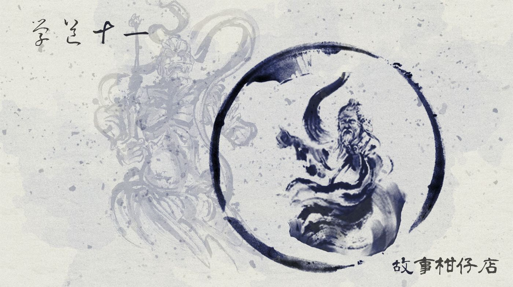
☯一章 學道（十一）成年禮☯
心跳聲原來能這麼急。如擂鼓，如馬奔。
無數次，拾兒想像過蒙叟及其房，如今他終於走了進來。
廂房比他想像還要簡陋，周遭是光禿禿的石壁，一張破了洞翻出棉絮的床墊擺在地上，蒙叟則坐在一邊的蒲團上。他比想像中還矮還瘦還老。
最引人注目的，是超過半人高的預天儀。包圍著青銅簍雕銅球的木環，一環刻著六十干支，一環則載八門八神，中央銅球則畫上了如勺的北斗七星。
「輪到你啦？」身形乾瘦、頂上稀疏的蒙叟嘿嘿笑了起來。他爛紅眼皮外翻，光明正大露出一對昏濁灰白眼珠。
沒有人碰，銅球自個震動起來，慢慢旋轉，朝左、朝右，摸不清方向。蒙叟豎耳傾聽儀器因震動而發出的細微聲響，左手劍指朝著右掌心不知比劃著什麼，忽然又怔住了。
「輕而易舉之事，你要弄得難如登天。」蒙叟語氣聽不出擔憂，反而有種興味。
「蛤？什麼意思啊？」拾兒反問。
蒙叟伸出細長而枯槁的食指，敲了敲拾兒腰間的羅盤，原本僵住不動的指針，竟開始靈巧轉動。
「入死，才能出生。往北下山去吧。」蒙叟丟下這句，便爬上床躺下，隨即發出鼾聲。
一頭霧水的拾兒，猶疑步出廂房，穿過七者眼光，出內堂，石門一開，虹月已等在外廳，迫不及待問：「怎麼樣呢？」
遲疑一秒，拾兒答：「說我骨骼精奇，是個練武奇才！別瞎操心，想買什麼？我收妖後得空給妳帶回來！」
收妖，才是成年禮的重頭戲。習了十多年功夫，有沒有那命格，就看今趟。
出孤峰，踏林中湖，穿樹叢。拾兒掏出剛獲的小羅盤，指針晃蕩，他歪頭想了會，腳步輕快往斷崖跑去，毫不遲疑，翻攀石壁，垂直往下。崖邊僅一人能通過的刀片岩，他一步一踏如履平地，老樹也是去路，他攀枝轉葉，很快來到一大片蒼茫草原。
山中無晨昏，來到此他才發現太陽隱沒，夜幕暈染。草是黃綠色的，乾燥蓬鬆如雲朵，被四周深廣如海的山包圍。
拾兒在此睡了一夜，在日出前醒來，瞧瞧羅盤，繼續前行。天地真大，也唯有天地，才容得下他雄心壯志。
從天傾洩的瀑布打得他渾身清涼，一身濕淋很快曬乾，他興奮側翻過橫跨溪谷的吊橋，來到一處熱氣蒸騰的溫泉街。溪畔是一整排莊園或民房，掛著「住宿」、「泡湯」、「山產」招牌，遊客三兩。
若是平常的他，肯定會在此走走玩玩。畢竟身為傳人，一年只能下山兩次，還得由師父帶著，學學怎麼買車票、掏錢買東西、哪間店很雷不要踩，根本不能玩個痛快。
可惜今日有要事在身，不宜散漫。他來到一大彎路口旁簡陋客運站，依循著師父當初教的，排隊、掏錢買票、搞清楚方向，再排隊上車。
下了車，他其實很難想像此處怎會有妖，但羅盤指示的確是這。
空氣中飄來不尋常的氣味。
拾兒循著氣味，沿著溪畔，在這清疏之地，竟見人群聚攏，莫非有妖物作祟？他伸長脖子一瞧，原來是一不起眼的肉圓店，掛著董字招牌。
難怪覺得不尋常，原來是肚餓，拍拍口袋中七師叔瑤光前日塞給他的一捲鈔票，他索性也排起隊來，一顆顆油泡肉圓淋滿帶甜醬汁，他吃得十分滿意，可惜虹月吃不到。接著，又學鄰桌，抄起水壺往碗內注大骨湯，和著醬汁喝盡。
吃飽喝足，他晃蕩溪畔，時不時得小心急速通過的自行車。看慣大山大谷，想不到這溪也是連綿遼闊的，一路蜿蜒不知要流往何處。山在很遠很遠的那頭了，自己的來時路顯得這麼長，十八年，等的不就是今天。
夕陽餘暉將溪水染金，偶然車輛經過的轟隆響，夾雜著規律的「哐、哐」聲。拾兒心裡一跳，豎耳傾聽，直覺聲音有異，掏出羅盤歪頭看了半晌。
「指著哪裡呀？！看不懂啦！」不等指針擺動停止，他便不耐地收起羅盤，一躍而起，乾脆逡巡小鎮，尋找聲響來源。
這裡的房子矮矮的，馬路大大的，車少少的，拾兒曾聽過師父形容大城市台北的模樣，擁擠、濕熱、大樓林立、五光十色。
正當他幻想著台北時，腳步突然停住了。
眼前平房屋簷下，有三個尖耳尖牙、頂上無毛的妖精，正往屋頂丟石頭，發出「哐！哐！哐！」聲響。每敲響一次屋頂，他們的臉便皺成酸梅似的笑得開懷。
那是一種愛惡作劇的妖精，拾兒笑了起來：「這種檔次啊？也太瞧不起人了。」
－－－－－
#新連載依舊兩天一篇每晚準時六點半喔
#請人客多多指教
#記得去各大書店買我們的書故事柑仔店哩
玄墨行者．學道（十二）：婆娑鳥
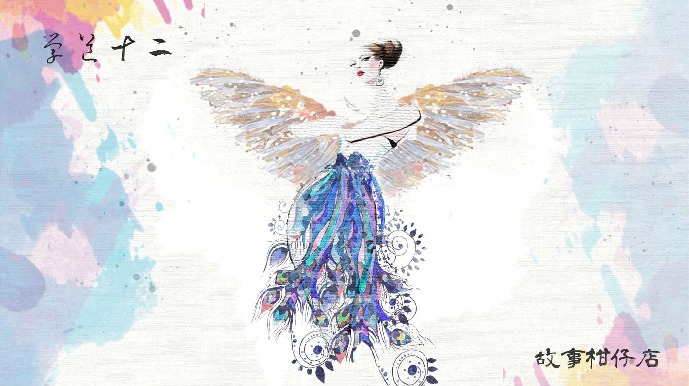
☯一章 學道（十二）婆娑鳥☯
「成年禮都對付這麼簡單的妖怪啊？也太放水了吧？」拾兒掏出師父出借的「醉妖弦」，按下木柄按鈕，瞬間伸展為手臂長的弦琴。
那三個調皮搗蛋的妖物還沒發現拾兒，仍不斷往屋簷丟著石頭，再被自己的惡作劇逗得尖笑不止。其中一個還跑到草叢裡，翻揀了一塊磚頭，雙手丟啊捧的，躍躍欲試。
「丟磚頭？這還得了。」拾兒蹲下馬步，將右腿翹在左膝上，弦琴就這樣安穩放妥了。他深吸口氣，扭動脖頸，舒展一下指頭，隨即撥弄起六條粗細不一的琴弦。
這是他第一次使用醉妖弦，琴弦勾入指尖的觸感很奇特，滾燙的，像被火燒得通紅的鐵絲。
拾兒手指翻飛如落在荷葉又彈起的雨滴，柔和樂音悠悠揚揚，當然也傳入了光頭小妖的尖耳裡。本來要擲磚頭的小妖，搔搔頭，將磚頭放下了，還拍拍同伴的手，像是在制止他們繼續扔石頭。
其他兩個同伴聽了溫柔弦聲，迷迷糊糊的，點點頭，一起往拾兒這裡走來。
這未免太簡單啦！拾兒在心裡歡呼，暗自讚嘆醉妖弦之高深莫測。師父曾說，這弦的來頭不小，是取「麒麟颶」的觸鬚磨捻而成，不必見血，也能和平收服妖物。
三個齊頭高的小妖手牽手站在面前，很享受似的跟著弦樂搖頭晃腦。就差最後一步了。只要讓他們再靠近點，便能將他們收進弦琴音箱，任務就大功告成。
「噹！」怎知愈謹慎，手指便出了錯，誤勾了最粗的那根弦，憑空迸出殺意濃重的低音。小妖像瞬間被敲醒，與拾兒面面相覷了三秒，嘰嘰呱呱尖叫起來，拾兒一慌，樂音荒腔走板成古怪呻吟。
小妖們同時轉身，連奔帶跳跑了，拾兒慌忙收起弦琴，邁開步子追了上去。小妖倒是聰明，一路往山林跑，就算拾兒在山裡野慣了，也很難在參天樹叢中順利追捕，尤其小妖滑頭得很，一進山林便兵分三路，搞得拾兒分身乏術，只得先選中一個繼續追。
偏偏天色又暗了下來，那小妖卻毫無阻撓，矮小身影在葉落林木間閃爍，時而跑遠，時而拉近。正當拾兒即將失去耐心之時，天邊忽然傳來如湧動雲霧般的歌聲。那聲響像能鑽石縫，掩天地，搖動滿山滿谷的土坡與樹根。
隨著那奇異歌聲，一片黑壓壓影子遮住了林間光線。抬頭一望，竟是一隻巨大無比的婆娑鳥。祂腳爪立於近直角的土坡上，張開五彩羽翅，張開的嘴喙傳出陣陣奇異歌聲，就連小妖也怔在祂腳邊，動彈不得。
拾兒也愣住了。他沒想過居然能見到婆娑鳥，那可是個大咖啊！動念一想，如果收了祂，豈不更讓師父刮目相看？再度紮穩馬步，掏出琴來，不料才撥響第一聲，滿天滿地都沒了光。
婆娑鳥歌聲時而高昂，時而低迴，各種鳥類從四面八方蜂擁而至，嘴裡叼著昆蟲魚蝦前來進貢，有一隻比馬還大的妖鳥，俯衝而下一舉勾起小妖的耳朵，送到婆娑鳥面前。
拾兒弦聲響徹了整座山林，婆娑鳥突然拍打五彩羽翅，唱出動容天地的絕世樂聲。剎那間，在場的禽鳥全轉過頭來瞪著拾兒。
「幹嘛？彈琴犯法啊？」拾兒嘴裡逞強，雙腳倒是一步步後退，然而那些目露凶光的鳥竟全數鼓起翅膀，朝他衝撞而來。
拾兒不甘示弱，拇指一撥，柔和樂音忽而肅殺，挾風帶雨襲捲山林，落葉枯枝狂掃而起，戳進鳥禽眼珠、翅股，哀啼如織，落羽紛飛；躲過攻擊的，嘴喙、腳爪、羽翅，全是致命武器，拾兒感覺滿頭滿臉都被利刃劃過似的，刺痛著神經，耳邊依然是美妙絕倫的婆娑鳥歌聲。
一秒空檔，所有的攻擊都還來不及落下瞬間，拾兒翻跳起身，還未端正弦琴，卻見所有禽鳥皆收束翅膀，定定站著。鳥群間，走出一個渾身披覆五彩羽毛的女人，眼光瑩潤，髮絲細柔透光。是個非常美麗的女人，然而撐著婀娜軀體的，竟是一對細瘦鳥爪。
拾兒看得出了神，女人卻伸出乾皺腳爪抵住他的臉，另一爪則踩住醉妖弦，溫言軟語：「你們玄墨一族也太超過了，收妖就收妖，怎麼能傷及無辜？簡直沒把我婆娑鳥放在眼裡。」
腳爪尖銳指甲牢牢陷進拾兒臉龐，混著一股揉雜了泥土與天際的氣味，臉上分點的劇痛倏地緊縮，像數條鐵柱貫穿了皮肉顱骨。他一個踉蹌踩空，抱著頭滾下山坡撞上石頭。昏過去之前，他根本不敢想，自己的臉傷成什麼模樣。
－－－－－
#新連載依舊兩天一篇每晚準時六點半喔
#請人客多多指教
#記得去各大書店買我們的書故事柑仔店哩
玄墨行者．學道（十三）

☯一章 學道（十三）☯
玄墨七者如今又齊聚內堂，但與拾兒出門前的氣氛截然不同，連最愛開玩笑的開陽及瑤光都鎖緊了眉頭，只有壁畫上兩位老者仍一派悠閒。天璣不發一語撫弄著醉妖弦，重新鎖緊繃斷的琴弦。
「老三的徒弟拾兒沒通過成年禮，現在身負重傷，如何是好？」天璇活動著下顎，原本方硬的腮骨更加暴突，活像隻不懷好意的青蛙。
「都躺三天三夜了，你這做師父的倒是很有信心。」天璇斜睨他一眼，「還是你已打算另找傳人？」
「老二，別人師徒的事，你插什麼嘴？」天樞出聲制止，撫著鬍髭深思一會才說，「栽個傳人曠日費時，也不能說換就換，但拾兒失敗了是事實。老三，你意思呢？」
說起來，拾兒重傷也算是天璣意料之事。他不是一般的孩子，注定多舛錯。幸而早做好了準備，拾兒倒在林間沒多久，天璣便趕到，將他揹回孤峰鎖在廂房內。
身上那些擦傷瘀血就不提了，檢視著拾兒臉龐幾乎綻裂見骨的殘皮掰肉，天璣不禁想，傷得也太重了些。婆娑鳥法力雖強，卻也不是濫殺無辜之流，看來，是拾兒先踩了人家的腳吧。
多說無益。天璣運氣凝神，劍指往拾兒脖子上的項鍊筆劃了幾下，藍玉髓發出淡淡波光，若有似無往拾兒傷處繚繞不斷，綻開撕裂的皮肉處，竟一點一滴長出新肉。
天璣知道他會好。只是需要幾天。
也因為如此，在現在的會議上，他提出了要求：
「拾兒隨我十八年，心性雖不定，但各方面天賦，在場師兄弟都是知道的。未能通過成年禮試煉，也是事實。為師不好偏袒，不如交由祖師判定。」
話說得客氣，但在場都聽得出來，天璣鐵了心要保拾兒。再說，祖師判定的變通方法，也是傳承多年的老規矩，實在沒有理由反駁。於是就這樣決定了：待拾兒清醒，再由祖師決定留或不留。
待在外廳的虹月急壞了，一本書翻來覆去看不進兩行字。拾兒在廂房裡昏迷不醒，眾師伯師叔又不知談了些什麼？倘若要拾兒走人呢？倘若拾兒失去了傳人資格呢？
轟地一聲，石牆大開，天璣最先走了出來，一聲不吭就閃進廂房。跟在後頭的是玉衡，拾月立刻迎向前去，急急問：「師父，拾兒能留下來嗎？」
玉衡憂心的愁容這才綻出一絲笑意，她輕輕戳了下虹月太陽穴：「妳呀，真不害臊。開口閉口拾兒、拾兒。」
「才沒有。」虹月整張臉漲紅了，唯獨左眼周胎記仍泛著淡淡青色。
「莫太擔心，妳三師伯說了，拾兒會好起來的。」
正說著，角落廂房傳來門被拉開的聲響，緊接著是一陣大呼小叫：
「怎麼搞得我一副葛屁的樣子，我好得很哪！」
拾兒動作有點僵硬地走了出來，一活動就酸疼入了筋骨。見了玉衡，連忙微微鞠躬叫了聲五師叔，抬起頭來，卻狠狠嚇了虹月一跳。
那張俊朗的臉破了。好長一道傷口自額頭橫過左眉筆直往下跨越眼眶，直到臉頰才抵達終點。傷口的皮肉未長全，仍腥紅，覆著粉色新肉。
「沒事。」拾兒指著毀裂左臉，嘻嘻笑，「陪妳。」
虹月回過神來，連忙撥撥額前髮絲，蓋住眼周胎記。天璣見拾兒又亂說話，乾咳兩聲，道：「還不先去焚香淨身？難道讓祖師聞你一身臭汗？」
拾兒一溜煙跑了。虹月放下心上的大石頭，看來三師伯已經找到讓拾兒留下來的方法。她伶俐問道，可還有需要幫忙的地方？
「不急。」天璣望著拾兒跑遠的背影，喃喃說，「往後要拜託妳們的事可多著。」
－－－－－
#新連載依舊兩天一篇每晚準時六點半喔
#請人客多多指教
#記得去各大書店買我們的書故事柑仔店哩
玄墨行者．學道（十四）：坎卦
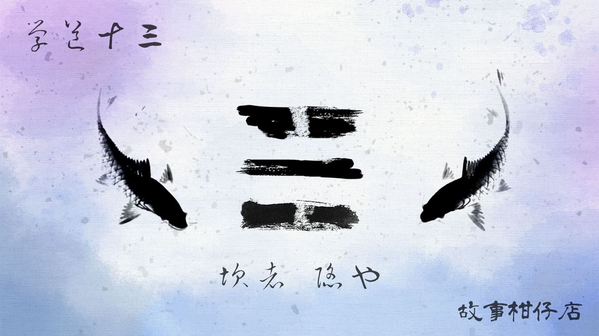
梳洗得頭乾臉淨的拾兒，換上還有著陽光餘味的粗棉衫，氣焰收斂了七分，畢恭畢敬站在眾師伯師叔面前。
「最後一次機會了，就看祖師留你不留。」天樞說道。
「還真沒想過你得勞駕祖師呢，平時這麼利索，以為那鬼石小妖對你來說太容易。」天璇幾句話夾槍帶棍，又像打翻一甕醋。
「說不定祖師無聊很久了呢，找點事給他們做不是挺好？」拾兒話才剛說完，就被天璣狠狠拍了下後腦勺。
「行了、行了。」天樞不耐制止，一聲令下，七者全數面向壁畫，點燃案上兩邊盤香，天樞持手爐喃喃稟報，末了，率師弟們出了內堂，獨留拾兒一人。
這是規矩。獨坐內堂七天七夜，只進少水，粒米不食，元神回到最純淨狀態，祖師自有定奪。然而會用何種方式表白？從沒有定數。
拾兒轉動了下肩膀，雖然仍是周身痠痛，但經過師父的調養已好得多；臉上那道口子，總算不再如火燒般，只是偶爾抽痛一下，類似牙痛那般埋伏著。
他在內堂正中央盤腿坐下，師父交代他要心無旁騖，可他心中卻是花花世界。一會兒想著婆娑鳥人形居然如此美艷，一會兒猜測大曲當年究竟收了什麼妖才順利成為傳人，一會兒臆測祖師會不會從壁畫上走出來邀他下盤棋。
「小子，最後機會啦，還心猿意馬？」
蒼老聲音像撕裂宣紙的毛邊，拖泥帶水從旁邊廂房傳了出來。
拾兒噤聲，心想這蒙叟會讀心術不成？隔著扇門都知道他心煩意亂。但他轉念一想，也許可多探點情報：
「咳，還說，你給的指示讓我遇上婆娑鳥，要不我早就順利入門啦！」
蒙叟可沒中計，呵呵尖笑，道：「估計羅盤你也沒用上吧？自找的麻煩還要賴我？」
拾兒本還想再回話，蒙叟卻先發制人：「你究竟來扯淡的？還是來求祖師的？」
不敢再回嘴。拾兒坐挺了，閉起眼睛專心打坐。
比兩個手掌大的盤香一點一滴燒小了，縮成一個蝸牛大。對弈的白眉者與佝僂者壁畫，這麼多年，始終停留在一顆不定的棋。拾兒閉眼，恍惚間看見海濤洶湧，好大一條鯨魚驚跳出海，腹部卻破了個大洞。牠拖著道道血絲游過，海蝕洞忽然傳來嬰孩尖聲啼哭––
拾兒被突如其來的幻境嚇得猛然睜眼，覺得渴饑。石洞裡曬不到日出也照不進月光，究竟過了多久，他毫無頭緒，只覺餓得五根清淨，二脈貫通。
盤香氣味熏得他昏昏欲睡，拼了命拉開眼皮卻欲振乏力，朦朧間壁畫上的白眉者似乎轉頭含笑看他。啊，難道祖師有指示了？拾兒更不敢睡，他掐擰大腿提神，忽然間，白眉者與佝僂者竟向他招手。他迷迷糊糊上前觀棋，棋盤內黑白子排成三列，乍看是「川」卻又不是，，左右兩橫都斷成兩截，唯中間那劃從一而終。
「什麼意思啊？別這麼神神秘秘，講清楚點嘛！」
正想著呢，膝頭卻遭猛力一踹，嚇得拾兒端坐起來，玄墨七者將他團團圍住，嚇得他心虛抹掉嘴角口水。
「你睡了整整七天嗎？」天樞冷冷說道，不等拾兒回答，他便向眾師弟說：「這等貪懶小兒，看來祖師是不可能留他了。」
「拾兒，有沒有收到指示？快告訴大師伯。」玉衡焦急問道。
「我......」想起那不明所以的夢境，拾兒也不大好意思明說。挨罵不打緊，就怕又丟師父的臉。
天璣卻像看穿了他的心思，說：「別怕，有什麼不尋常的，就說。」
「我夢見祖師了。」
拾兒重述夢境，天樞聽見奇怪符號現形，臉色凜然：「你畫來看看。」
拾兒手指蘸了點口水，就地畫出。七者面面相覷，天璣率先露出微笑，瑤光開心喊著：「祖師留你呀！太好了！」
開陽跟著嚷道：「多虧你啊，拾兒！否則我們還得跟新傳人磨合，多累啊！」
天權站得遠遠的，背剪雙手，兀自望著壁畫不知想些什麼；天璇很勉強擠出笑容，方硬腮骨顯得歪扭錯落。
還搞不清楚怎麼回事，天璣輕輕推了下拾兒的頭，說：「倒過來看。」
轉了個方向，原來將符號橫著看，就成了個八卦中的「坎」卦。
這下子，他更迷糊了，如何一個「坎」卦，就判定祖師留他？
「還愣著做什麼？備入門禮去喲！」
蒙叟聲音像拖著長長尾巴的輕煙，還有點反應不過來的大夥，既清醒又迷茫地趕緊忙活起來。
－－－－－
#新連載依舊兩天一篇每晚準時六點半喔
#請人客多多指教
#記得去各大書店買我們的書故事柑仔店哩
玄墨行者．學道（十五）：天地八方
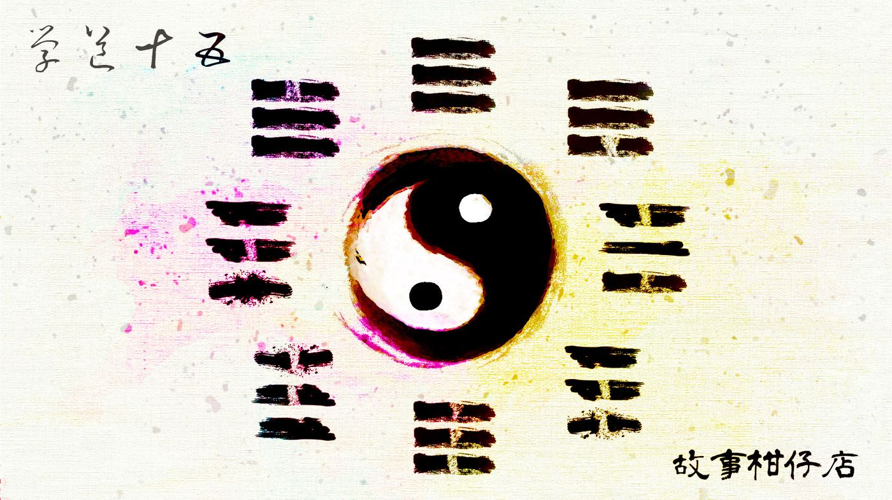
內堂案上，擺著一個漆黑檀木的水盂，裡頭盛裝的液體同樣漆黑。旁邊擺著一根箭竹削成的細棍，前端鑲著釘梳。
玄墨七者全數朝壁畫跪了下去，天樞捧起水盂，凜聲稟報：
「祖師在上，三弟子玄天璣徒弟拾兒獲准入門，即刻進行入門禮，禮畢之時，拾兒正式成為我玄墨一族的傳人。」
他從懷中掏出如指甲片大小，卻滿室生香的蠟狀物質，放進水盂，說：「此物提煉自千年鯤精，乃頂級的驅魔香，是我大弟子玄天樞贈與新傳人的薄禮。」
接著，他捧著水盂依序來到眾師弟面前，所有人早已準備好禮物，紛紛投了進去。
老二天璇取一小塊灰白鈣質，說：「這是從一角幻獸頭上的角削來的，可避凶。」
老四天權將一片斑紋點點的薄片吹進水盂，道：「鬼蝶翅翼，助你身輕如燕，眼觀八方。」
老五玉衡搓進一抹粉末，說：「贔屭神獸甲殼磨成的粉，希望你能負重任、沉大氣。」
老六開陽笑嘻嘻道：「準備很久啦，終於派上用場。」拈出一小撮細毛，「這是仙狗尾巴上的毛，至於有什麼用途……我還不清楚。」
老七瑤光取一小瓶滴入數滴汁液，「妖蛇毒血最神，通筋脈、貫血路！你會感謝我的！」
最後水盂來到老三天璣面前，他狠狠咬破食指，鮮血點滴入盂。
「從今往後，拾兒便是我玄天璣正式傳人。為師承諾，所有一切都傳承予你。」
拾兒朝七者行了禮，跪在天樞面前，衣襟拉開，露出左半邊肌肉隆隆的膀子。
天樞拿起細竹棍，往水盂裡蘸兩下，釘梳扎進拾兒左頸，墨色沈進皮膚。
「還行？」
脖頸皮薄肉稀，每一針扎都像鑽進血管肌理，痛得十分劇烈。拾兒逞強，漲紅著臉點點頭。天樞又拾起針具，一排一排定針、入墨，將所有人的祝福及心眼，全數刺進拾兒點點滲血的左頸。
那汗，不只拾兒，還有天樞。原來天樞那樣眉目疏朗、身形清瘦之人，也能這般流汗。這活兒不容易，一體之力，全匯聚在針尖，用肌肉，用筋絡，用呼吸，用眼，用神，細細密密，用他的腕他的指，將命運一點一點刺進這血脈跳動，生氣勃勃的少年之頸。
雖累，但天樞還算珍惜。這是難得的勞動，畢竟上一次，是為了三年前的大曲。
「成了。」天樞放下針具，鬍髭底冒著汗，他拇指蘸墨，往拾兒眉心重重一捺，「開！」
綿密刺痛停了下來，拾兒鬆懈了臂膀，抬頭一看卻驚見七者左頸上全出現不曾看過的圖樣，很類似他剛刺上的坎卦卻不盡相同，再仔細一瞧，師父天璣的圖案倒是與他一模一樣。
原來玄墨七者脖子上的刺青，按排行是八卦名「乾、坤、坎、離、震、巽、艮」，卦名對應的則是「天、地、水、火、雷、風、山」。
「拾兒，入門禮後，代表你開始能夠觀三界，通天地，所以你才看得見我們的紋徽。不過，替天行道之事，並非只有玄墨獨佔，往後若遇見同道中人，他們也可能看得見你的紋徽。」天璣解釋道。
傷口仍痛著，點點滲出的血珠扎得拾兒癢癢的，不知怎麼的，鼻子也癢癢的，打不出噴嚏，反倒眼眶熱熱的。
他跪伏下去，深深叩頭，喊：「玄墨傳人拾兒拜見師父！」
鼻頭貼地的當下，拾兒突然又冒了問號，倏地抬起頭：「不對呀，七者只有七人，那最後一卦在誰身上？」
玉衡首先摀著嘴笑了出來，說：「你反應也太慢了些。」
「我太興奮了嘛！」拾兒一臉懵懂望向開陽及瑤光，期待兩位師叔給他答案，沒想到大夥卻你看我、我看你，憋著話不回答。
瑤光指了指廂房，搖搖頭，食指放在唇上，拾兒還沒反應過來，廂房內已傳來蒙叟摧枯拉朽的聲音：
「小子，入了門連我都給忘啦？有了我，咱們這玄墨一門才算是天地八方呀！」
－－－－－
#新連載依舊兩天一篇每晚準時六點半喔
#請人客多多指教
#記得去各大書店買我們的書故事柑仔店哩
玄墨行者．學道（十六）：葬
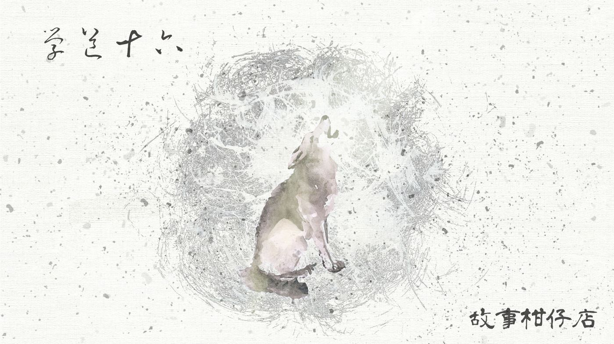
剛下過雨的山林，空氣特別清朗。
遠方的雲都給雨沖散了，絲絲的，在天空拉起一條條連不起來的白繩。
孤峰頂巔，似乎更清涼些，吸進鼻腔的空氣都彷彿夾著冰絲。
這該算是好天氣嗎？姑且是吧。
山林中的鳥及鷹，是通風報信最不藏私的生物了，正有一群鳥撲翅飛來。
有一隻特別大的，嘴喙內勾，像一種機巧的武器。他自樹頂俯衝下來，瞄準，猛力啄，串走天璣的左邊眼珠，又振翅飛走。
天璣躺著與睡著沒兩樣，玄墨一門除了蒙叟全到齊了，站在不遠處的樹下，看另一隻鷹啃掉剩餘的一邊眼珠。一群鳥兒佔領了天璣的肚腹，嘰嘰喳喳啄食起來。
原來那樣瘦的人，還能餵飽這麼多鳥。也許再晚一點，便要成為蒼蠅孵卵的溫床。
鳥群嘴喙太利了些吧，大曲微微撇過頭去。他對三師叔沒有成見，相反地，他其實挺喜歡天璣。大曲的視線恰好落在天樞側面，發現師父似乎又消瘦了幾分。
玄墨一門就這麼靜靜陪著。瑤光點起一炷清香，願天璣隨煙霧還返天地八方。
這是規矩，墨者薄葬，玄墨門人只要有弟子離世，亡者以天為被，以地為床，肉身消隕，還諸乾坤。
虹月暗地裡扶著玉衡的臂，指尖傳來極輕微的瑟縮。玉衡不是沒見過此等場面，只是躺在那裡的人是天璣，她難免希望鳥群嘴下留情。
拾兒孤零零地站在最靠近天璣的岩石上，穿著天璣生前慣穿的苔色長袍。他不看師父，只是遙望遍地群峰，風起，長袍飛揚。
其實師父早有預感吧？
打從拾兒刺了徽，入了門，一向隨意的天璣，這三個月來突然加緊了腳步，訓練他的體術及武術，帶他去鎖妖庫看看那些妖物，尤其盯著他，把所有收妖琴譜彈個滾瓜爛熟。嚴格精實的程度，連玉衡都叮囑著別累壞了拾兒。
某一天晚飯後，大夥各自進廂房休息了，天璣卻拖著拾兒到林中湖，「月色正好，陪為師釣場魚吧。」
綁好了線，天璣卻不釣，反而端起醉妖弦彈奏起來。
他手指飛舞，一曲嘈嘈切切，一曲大珠小珠落玉盤，一曲登高望遠不勝寒，一曲邀月對影成三人。湖面漣漪圈圈，月色粼粼。
「師父，您要鬥琴哪？」拾兒玩笑說著。
天璣倏地按住琴弦，樂音嘎然而止。「你已正式成了玄墨傳人，別一天到晚想著鬥。太多事，鬥不過。」
「開開玩笑嘛！」拾兒耍賴，摸摸左頸刺青。打從入門以來，他便常常下意識去摸。
天璣閉起眼，放柔手腕，細瘦指尖勾了下琴弦，那一聲，像划開了時間之流，直往黑暗的樹林去。
弦音如叨叨絮語，那麼遠又那麼近，與其說是收妖，更像是亟欲對誰說的話，有急有緩，愁怖如織，卻也天寬地闊任逍遙。
那是他沒見過的師父，拾兒在這天晚上，聽見了前所未聞，卻也一輩子放在心裡的一首歌。
當然，又是空手而歸。天璣是最愛護湖裡魚的人。
撐著沈重眼皮回到廂房，拾兒本想速速和衣睡了，沒想到天璣繞過隔間，跑來坐在床前，戳戳拾兒的腦袋，說：「你正式入門也滿三個月了，有沒有什麼問題？為師都可為你解答。」
「我想睡覺啦！」拾兒正想翻倒下去，卻被天璣攔截，身子給扶正起來。
「師父跟你談天呢，淨想著睡覺。」天璣故意繃著臉，「以後沒得問別後悔。」
「等我想到再問嘛。」
「不成。就今晚。今晚為師有興致。」
天璣難得的任性起來，拾兒只好想了想，想不到什麼重要問題，隨口問：「當初罰抄《玄墨宗譜》，有首詩給蟲蛀浸水了看不清，究竟寫著啥？」
天璣一笑，鬚長鬍子飄飄然，他兀自吟詠：「萬念神人妖鬼銜，死生成序似有弦；視海觀天察如相，鯤造玄機道方還。」
拾兒一臉懵懂，嘴上打發著說：「謝師父，我知道了，晚安！」不到幾秒，鼾聲大作。
朦朧間好像看到虹月正背對著沖涼，背脊光潔如玉，曲線小小起伏，十分無邪。拾兒按耐不住，基於某種慾望或好奇，他偷偷摸摸前進幾步，想看清楚些。
挽起頭髮的虹月突然轉過頭來，竟長著天璣八字鬍的臉！
拾兒猛然嚇醒，又被床邊伸長脖子盯著他看的天璣嚇了更大一跳。
「做惡夢？」天璣問。
「啊？嗯，對啊。」總不好說夢到師父您吧。拾兒想。「師父，您不睡覺在幹嘛？」
「喔。方才忘了告訴你，以後我不在身邊時，你若有疑問，就去翻我床邊的箱子，裏頭的東西都是給你的。」
說完這麼不著邊際的一句話，天璣便繞過隔間回到自己的床，拾兒沒作他想，抱著棉被又倒下了，這回應該是夢不到虹月了吧。
但拾兒作夢也沒想到的是，這竟是最後一次見到師父天璣皺眉的臉。
－－－－－
#新連載依舊兩天一篇每晚準時六點半喔
#請人客多多指教
#記得去各大書店買我們的書故事柑仔店哩
玄墨行者．學道（十七）：舊衣

那天早上，大曲特別覺得奇怪。
天還暗著，月亮來不及走，他便下床，出孤峰，摸黑到一旁的灶上生火煮早餐。很簡單的伙食：白粥、醬瓜、腐乳，再往油鍋煎雞蛋。
對他來說，早起不算是苦差事，清清靜靜，他特別喜歡在一片灰霧中燃起火光的感覺。特別溫暖，特別明亮。只要輪到他當班，大夥肯定能準時開飯；哪像輪到拾兒掌勺時，讓師父等得吹鬍子瞪眼睛。
不過，通常天璣在山上時，大曲就不會是最早起的。
時常，他才揉著眼睛走出孤峰，便看見天璣從林中湖散步回來，也不直接進房補眠，一屁股坐在灶旁看大曲生火煮飯。有時看著鍋中物逐漸沸騰，有時自顧自撥弄琴弦，有時不知思索著什麼，偶爾閒聊兩句。
「大曲，不累嗎？」天璣右手撐腮，問道。
「不累，我很早就睡了。三師叔不去休息嗎？這兒很熱。」
「我是說，你老這麼規矩，不累嗎？」
聽了這句話，大曲往灶裡添柴的手臂都膠住了，火光搧著他的臉，暖烘烘的。
大曲不知如何回答，天璣站了起來，「我回房躺一下。」
正要轉身走，他突然又交代：「蛋黃半熟，謝謝。如果蛋白能焦一點就太完美了。」說完，拍拍大曲的背，走了。
大曲抬頭，看見晨曦照得群山一地鎏金。
餐桌上，天璣咬下荷包蛋，偷偷給他一個讚許的微笑。而天樞只是面無表情，機械式的，一口一口將餐食往嘴裡送。
從此，他更期待輪班煮早飯的日子。
可是那天，天璣沒有來。
大曲一邊做早餐，一邊疑心，好不容易捱到煮完，發現餐桌上獨缺天璣與拾兒。
「這對師徒真不像話。去叫他們吧。」天樞臉色凝重如山。
後來的事情，大曲恍恍惚惚有點記不得了。總之他去敲了廂房門，拾兒滿臉睡意開了，然後他們發現天璣叫不醒……。
天璣死了。
連睡在隔壁的拾兒都沒察覺。天葬之後，拾兒還是很難察覺：師父不在了。
他想起虹月這陣子老嘟噥著天璣消瘦得不像話，眼窩下凹，眉骨高聳，「像整個元神都給掏走了。」她是這樣形容的。
如果早日將虹月的話放在心上，也許就能挽回師父？
然而這豈是他能決定的。回想那師徒共度的最後一晚，師父說的話，如今想來都是遺言，都是道別。而他竟那樣希哩呼嚕地揮霍掉了。
回到廂房，天璣慣穿的苔色長袍整整齊齊放在角落，起了結實累累的毛球。長袍下方壓著一個小硬紙箱。拾兒記得，那是好些年前，天璣從山下帶的手工餅乾的包裝盒。
拾兒打開箱子，裡頭放著瑤光送的手機，以及一張十分粗略的手繪地圖。
大山、小溪、急瀑，全成了直得或橫的粗糙筆畫，還有一圈一圈的東西。拾兒看半天才認出，原來那是石頭。
「畫石頭做什麼啊……。」他認得出來那出自師父之手，天璣一向很沒有繪畫天分，字又醜。
總之，翻過石頭之後，有一條歪歪扭扭的小路，路邊特意用紅筆畫了一個勉強看得出來是房子的形狀。屋頂上方還打了三顆星星，宣示它的重要。
那三顆大小不一致的五芒星逗笑了拾兒，幸好紙張左上角標示著東西南北，尚可辨認方位，否則拾兒真的要懷疑師父在弄他。
地圖背面寫著短短一句：「拾兒：四下無人，不妨彈首〈似是故人來〉。你應該練好了？」
他愈來愈確定師父根本預知了自己的死亡，才安排得這麼妥當。然而師父又何須留下這麼多線索，而不直接告訴他？
拾兒想破了頭，依舊理不出頭緒。
那些雜物下方，墊著另一件苔色長袍。摸起來滑順而有點漿硬，簇新的證明。
這也是玄墨一門的規矩。當傳人正式入門，做師父的就要為徒弟準備一套新衣，待他能獨撐大局那日，便有了穿上新衣的資格。
拾兒放下新衣，抄起一個舊得千絲萬縷的小背包，將手機和地圖一股腦塞了進去。他不想等了，哪怕得偷溜，也要弄清楚來龍去脈。
接著，他抖開天璣舊袍，凝視良久，最後將雙手伸進袖裡。
萬事皆備，他唰地拉開門，站在門口的天樞嚇了一大跳。
「你要去哪？我正要找你。」
－－－－－
#新連載依舊兩天一篇每晚準時六點半喔
#請人客多多指教
#記得去各大書店買我們的書故事柑仔店哩
玄墨行者．學道（十八）：上任
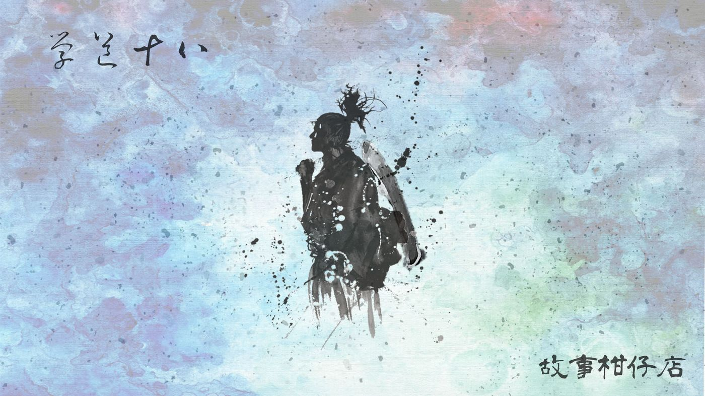
「你要去哪？都什麼時候了還亂跑。」
天樞打量背著小包、身穿天璣長袍的拾兒，沒好氣的說。
「呃，我……沒事，我想念師父，想去湖邊坐坐。」面對突如其來一問，伶牙俐齒的拾兒都忍不住結巴。
「私情先放一邊吧，現在有更重要的事得辦。」
天樞將拾兒叫到外廳，所有的師叔師伯都在那兒等候。六個人圍成個半圓，圓心是一張矮桌，要拾兒坐上去。
「你得趕緊成為七者之一才行。」
天樞一臉憂煩，很簡要地說明：原來以往玄墨弟子間若有人將亡，蒙叟都會提前九個月預知大約死期，好讓門派做準備，讓準亡者的傳人三個月通一關，通過三關後，拿到正式成為七者的資格。待一有人死，傳人立刻遞補。玄墨必須隨時維持七者不缺，這是傳統也是規矩。
奇怪的是，這回蒙叟居然沒有預知天璣的死期，自然也沒有提醒大家準備讓拾兒通關。但為了不使天璣的位置空下來，其餘六者決定採用快速通關機制，只求拾兒盡快遞補。
拾兒聽得一臉茫然，沒想過這門的規矩可真多如牛毛，他問道：
「七者暫時少一人，會發生什麼事嗎？」
在場六者面面相覷，沒人答得出來，天璇不耐喝道：「祖師立的，還要理由嗎？」
拾兒識趣閉上嘴，天樞宣布：「第一關，《神異術》驗收。」
圍著坐的六者依序往空中灑香灰，灰中出現各異妖物，或飛或攀，或惡或凶。幸好經過天璣特訓，拾兒對種種妖怪特性了然於心，甚至一見腳爪或體毛，便能一葉知秋，迅速答出妖物名諱及弱點。
第一關毫無阻礙地通過了。接下來第二關，則是驗收機關術。
「你的琴呢？」天樞問。
拾兒從懷中掏出醉妖弦，恢復成正常大小，端正擺在桌上。
「喝！」天樞衣襬凌厲一翻，六根弦竟應聲而斷，就連柄上弦鈕也一一散落，發出迴盪廳堂的音響。
「這、這是幹什麼？」拾兒不解。
「往後收妖，弦斷琴壞可少不了，若不能再最短時間重新佈弦，坐以待斃吧。」
至此，拾兒才恍然大悟。難怪入門後，師父每天規定他得將弦卸下，拿張蠶絲織雲布，一條弦、一條弦細細地擦，再一一鎖回琴身。師父根本在為他預習往後的關卡。
他氣沉凝神，「唰」地抽掉琴弦，掌心壓緊斷口，一搓，斷裂的琴弦居然接了起來。他拾起弦鈕一一安裝原位，琴弦綁上鈕，接著將琴身翻了過來，原來背面有個小卡榫，轉一下，便可一次拉緊六條琴弦。
拾兒忽然狠狠往桌面重擊，琴身不動，倒是琴弦極輕微地顫抖起來。那震動幅度微乎其微，幾乎是靜止的，只有空氣感覺得到動靜。他側耳傾聽，指轉弦鈕，讓第三條弦鬆了一點點。僅是一點點，連拾兒手指都還沒感覺到動作，那根弦已經鬆至份上了。
他擺正弦琴，手指撥剔摘挑，每個音都恰恰站在準尖上。
「拿著你的琴，走吧。」天樞點點頭，權充是認可通過了這一關。
－－－－－
#新連載依舊兩天一篇每晚準時六點半喔
#請人客多多指教
#記得去各大書店買我們的書故事柑仔店哩
玄墨行者．學道（十九）：烏蝶
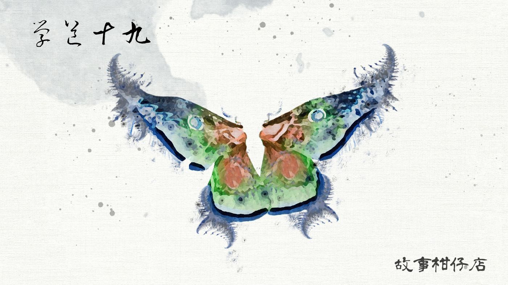
一行人穿過蔓生雜草，來到鎖妖庫。天樞望望四周鋪天蓋地的木頭隔間，轉身對拾兒說：「你大概也猜到了，最後一關，考你的收妖本領。」
天樞走入那條兩邊塞滿各類妖物的潮濕甬道，一會兒彎腰端詳籠中奄奄一息的精怪，一會兒又敲敲籠樁要牠們安靜一點。
最後，他停在一隔間前，手刀一挑，咬緊鎖死的木樁緩緩鬆開，綻出一道缺口，一紙茶色薄片率先伸了出來。
「你就好好跟烏蝶打一場吧。」
天樞後退，其餘五者則守住庫門口，那薄片掙扎地從缺口掙了出來，在火光下緩緩現身，巨大的影子幾乎蓋住了拾兒的身影。
拾兒沒見過這麼大的蝴蝶，牠展翅如鷹，蝶翼沾滿點點螢光黃及桃紅色點，每一振翅，都閃得人眼花撩亂。
拾兒趕緊鎮定下來，端琴弄弦，奏一曲〈鴻門宴〉，歡迎搧翼生怪風的烏蝶。今夜，他要速戰速決。
望著拾兒對付烏蝶的背影，玉衡數度出現幻覺，彷彿是眼前不是別人，而是天璣。每一音節的尾音，那背影都會下意識地將手往右上方揮去，像一艘遠航的船，像一隻返家的飛鳥，意氣風發得宛如開天闢地。
這個習慣，天璣從好久好久以前就有了，只是玉衡沒想到，他連這微不足道、只有自己記得的小事，都留給了拾兒。
玉衡很意外天樞挑了烏蝶應戰，原以為會找更難對付的。此處不寬闊，一展翅便要削過兩旁隔間，對牠來說相當吃虧，玉衡眼尖發現，蝶翼邊緣已磨損出缺角。
倒也不是天樞善良。此地雖對烏蝶不利，但他刻意挑選沒有聽覺的妖物，就是為了看看拾兒的真功夫。
不知拾兒是否不瞭烏蝶沒有聽覺，手上琴曲不只不停，還越彈越急，絮絮叨叨、急急切切地絃聲，讓兩旁被關住的妖物紛紛騷動起來，特別是角落裡一隻眉毛倒竪的雷公鳥，本來病懨懨的，隨著曲調愈顯高昂，牠開始發了狂似的不斷衝撞木籠。可木籠是施了法的，雷公鳥每一撞都哀叫連連。
烏蝶絲毫不受影響，像架直升機俯衝而下，銳利如刃的蝶翼劃過拾兒右膀，若非閃得快，破的可不只衣服。
一眨眼，烏蝶卻消失了。出了木籠，烏蝶的擬態能力，讓牠能悄無聲息地隱藏在拾兒跟前，不被察覺。
敵身未明，不能停手。拾兒的指頭愈來愈急，一邊小心閃避烏蝶可能的攻擊，一邊將曲彈得如急急軍令，腳一步步慢慢地向庫門移動。
烏蝶冷不防地由拾兒的影中竄了出來，一個弓步側身，拾兒勉強避開閃著螢光的蝶翼，烏蝶隨即又在眼前隱沒消去。
手上琴曲未停，拾兒已離庫口只有一步，而庫口狹小，加上五位行者，若烏蝶再次進攻，這次劃破的就不只是拾兒衣裳了。
烏蝶抓準時機，雙翼蜷身，如子彈般對準拾兒眉心而來，在旁的玉衡不顧規矩，正想出手相助，一旁木籠裡被曲聲挑撥的雷公鳥卻狠狠跳起，撞上低矮天花板，牠腳爪一踏、再踏、三踏，召來遠方天邊一道銀白光束咬破黑夜。
那道閃電瞬間撚亮了妖庫口，照得所有人及妖物一身慘白。烏蝶見光，彷如觸電在空中顫抖兩下，隨即飄落在地，像一幅標本，動也不動。
「行了，收拾一下吧。」
大局已定。天樞使了眼色，拾兒曲調一轉，變得柔美婉轉，如黃鶯出谷，如淙淙溪流。一時間，妖物們漸漸恢復了平靜，就連暴衝雷公鳥都歪倒靠著木籠，疲憊極了的模樣。
是挺聰明的。天樞心想。善用烏蝶畏光的特性，刻意以曲撩撥雷公鳥，用最短時間擊敗了對手，老三的傳人，果然不能小看。可惜大曲就差在這。
樂曲漸緩，逐漸平息，最後一個尾音滴溜在無際山谷間，夜空的北斗七星，今夜依舊閃爍如鑽，而旁邊的一大一小青色妖星，熒熒的，像火燒。
－－－－－
#新連載依舊兩天一篇每晚準時六點半喔
#請人客多多指教
#記得去各大書店買我們的書故事柑仔店哩
玄墨行者．學道（二十）：上位
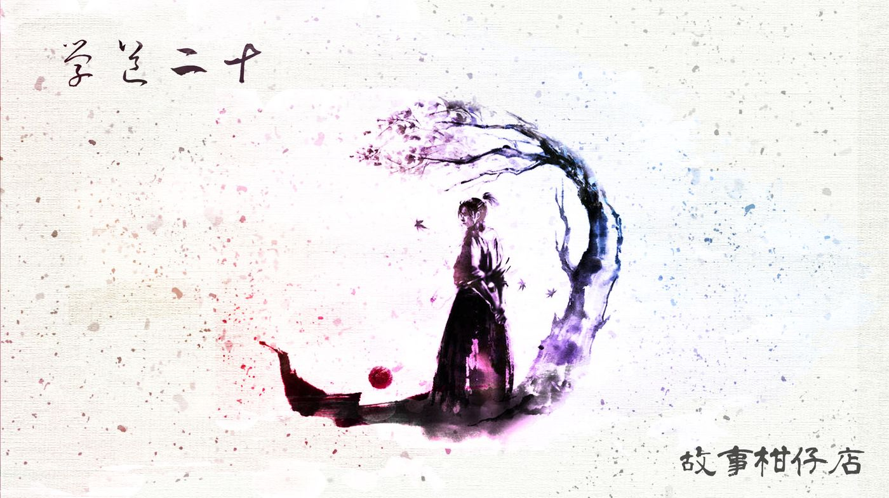
如今，拾兒居然真的承接「玄天璣」的位子，正式成為玄墨七者一員。
他這才想起，自己連師父究竟叫什麼名字都不知道。不知道當年師父的師父給他起了什麼名字？
想想真有點悲哀，入了玄墨一門，註定是個沒有自個兒名字的人。
大夥還改不了口，倒是天璇，「老三、老三」叫得很順溜，彷彿世界上從沒過師父這個人。
「我到底該叫你師伯還是天璣呀？」虹月歪著頭問。連她都困惑了，這題果真不好解。
「繼續叫我拾兒不就得了？犯法嗎？」拾兒食指往虹月眉心輕輕一戳。
他嘴上逞快，心裡焦急得很，惦著師父留給他那張醜不拉機的手繪地圖，想趕緊偷溜下山一探究竟。偏偏剛入七者，其他人盯得緊，實在跑不了。
正想著呢，蒙叟卻傳了他。
這麼快就得下山收妖啦？他想。
進到蒙叟廂房，只見這枯瘦老頭兒躺在床上翹著細腿，一旁的預天儀則維持著極緩慢的速度安穩轉動著。蒙叟毫無緊張神色，遲遲不宣布妖氣方位。
「傳我來，不是要指派任務嗎？」拾兒沈不住氣，先開口了。
「你想去哪就去哪。今日傳你，是為了不讓人擋你。」蒙叟擺擺手，一臉瞭然於心。
拾兒喜出望外，正要告辭，卻想起師父生前最常被指派任務，恐怕跟蒙叟有因緣。於是他鼓起勇氣問：「您跟師父很熟吧？」
「怎樣叫熟？他幹的好事都給我摸清了，這算熟嗎？」
「師父、師父幹了什麼好事？」拾兒很緊張，深怕自己的仰慕一夕全毀。
「你師父……」蒙叟暗啞著聲音，像一根隨時會崩斷的弦，崎嶇地、蜿蜒地，道出連拾兒都不知道的事。
原來天璣雖最常下山收妖，但他從不一味濫殺，而是公平給予每個妖物上訴機會。倘若妖物出於無奈或逼不得已才作亂人間，天璣便會放牠一條生路。
「這不對呀！每次都得將妖怪關進鎖妖庫不是？還得向大家報告呢！」拾兒心急發問。
「這世道，有點本事才能走正道。」蒙叟解釋，一旦天璣決定放走妖物，便會以木頭製作替身，只要取該妖物的一片指甲、一根毛髮稍微作法，就足以讓替身的妖氣騙過所有人。
「師父為何要這樣做？玄墨一門的任務不就是收妖嗎？」拾兒著實更想不透了，十八年來，他所受的每個訓練，不都是為了消滅妖物做準備嗎？
「無知小兒，《玄墨宗譜》沒念熟吧？白紙黑字寫，咱任務是要維護三界平和。和平難道只有趕盡殺絕一途嗎？你們都曲了祖師的意喲！」蒙叟翻身坐起，手在膝蓋上打著拍子，灰濁眼睛空茫望向遠方。
「因為師伯都是這樣教的，師父也沒特別講，所以我……」
蒙叟撫額，嘿嘿怪笑，「天樞連我的話都聽不進去嘍，你以為天璣能改變什麼？」
拾兒不解，天樞應該是最在意祖師規範之人吧？他甚至還每日獨自提早起床在內堂靜坐哩！
「你師父肯定太疼你了。」蒙叟尖聲怪笑起來，不知為什麼，聽起來像是嘲笑，「都幾歲了還不懂，恨意才是世間最難以改變的呀！但恨意，也最能讓一個人堅強起來喲！」
拾兒還想再追問，卻被蒙叟趕了出來，「去！去！你不是有正事要辦？」
他思忖著方才的對話，仍理不出個頭緒。出了神，出了外廳，看見天樞正在驗收大曲的體術。
拾兒與烏蝶在鎖妖庫一役後，天樞對大曲便加倍嚴格。過去勉強點頭的表現，如今都只能換來天樞的震怒，大曲只能也加倍努力著，希望換來師父的肯定。
此時，大曲正不斷重複向空中踢腿，速度已經快得讓人看不見影子，但天樞沒有點頭。
日正當中，每當大曲踢出一次，汗水也跟著甩了出去，在陽光下閃閃發亮。他咬著牙，務必再快、更快、最快，師父要他想像眼前站著此生最大仇敵似的去踢，他想了半天，只有個模模糊糊的影子，一頭捲髮，身形碩壯。
拾兒不出聲，看著。
心理作用吧？發動攻擊的大曲眼神純淨，而一旁坐著看著的天樞，眼底卻有一股別人所沒有的執念。
－－－－－
#新連載依舊兩天一篇每晚準時六點半喔
#請人客多多指教
#記得去各大書店買我們的書故事柑仔店哩
玄墨行者．學道（二十一）：土地公
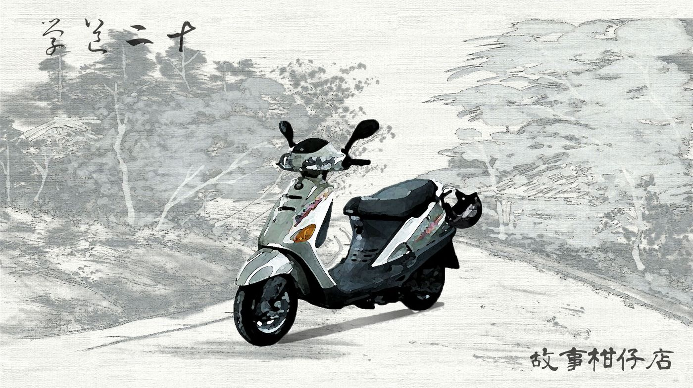
深怕被抓回去似的，拾兒剛向蒙叟告辭，隨即抄起老早就收拾好的包包，套上師父的舊長袍，揪著那張根本是玩笑的手繪地圖，一溜煙出門了。
「這是在搞我嗎……」群山間有好多條如師父畫的小溪，拾兒不確定往哪裡走才好，只好依著直覺亂走，盪藤走壁，躍石穿林，居然也真的讓他找到了地圖上畫的小橋。
「太神了，這麼爛的地圖……。」拾兒的碎念，聽不出是讚嘆還抱怨。
抵橋彼岸，穿過一片矮樹叢，他來到一條人不算多也不算少的小鎮，堪能會車的小路旁，有兼賣烤香腸及黑輪米血的小攤，還有載滿水蜜桃的發財車，懸掛著「不純砍頭」的紙板。
經過拾兒的行人，不約而同打量著他。「看什麼啊？」拾兒心想。他掏掏口袋零錢，買了支香腸，當場吃了起來，邊吃邊端詳地圖。
「少年仔，你怎麼穿成這樣？擱留長頭髮，飄撇呢！」阿桑熟練翻動火爐上的香腸，熱情招呼著他。
拾兒恍然大悟，原來是自己穿得不像一般人，才遭來異樣眼光。
「你在看啥？地圖喔？」阿桑探頭過來，邊掏出手機，「少年仔，你跟不上時代，像我這種老歲仔都知道用估狗妹，你擱在看地圖。」
一看手機螢幕密密麻麻的街道巷弄，拾兒大驚，這未免太複雜了！相形之下，師父畫的地圖果真容易許多。至今才懂師父苦心，拾兒不禁有點慚愧。
「來啦，你要找啥？我幫你找。」阿桑很熱心放大畫面又縮小，「欲呷看麥黑輪嗎？好呷喔！配湯啦！這湯我自己熬的。」
又被推銷了一支黑輪，手還端了碗湯。阿桑邊看著手繪地圖邊滑螢幕，點來點去，端詳一陣。「少年仔，我看這張地圖畫旁邊有客運車牌，你走右邊這條，勿是左邊喔，左邊是往山上去。」
阿桑指著前方岔路，殷殷叮囑。拾兒點點頭，臨走前又被推銷了兩支香腸。
「我看滿遠的，我給你打包。」阿桑手腳利索用紙袋裝好，遞了過來。拾兒真沒想到，居然在這小攤子花了一百元。
他循著右邊岔路往前走，這路是愈來愈細，兩側是插滿翠綠秧苗的水田。別說房子了，連個人也沒有。此時退也不行，他只好邊走邊東張西望，期望那間屋子趕緊出現。
忽然，他止住了腳步，視線落在路旁一座小小的土地公廟。說是廟，其實也只有半人高。香爐裡插著高矮不一的香，白鬍子神像咧嘴笑得十分慈祥。
難道師父要我來找這間廟？拾兒心想。但他繞來繞去，就是不見人影。
心浮氣躁翻過地圖，背面那行字提醒了他：四下無人，不妨彈首〈似是故人來〉。
拾兒放下輕便行囊，隨意坐在路旁石頭上，將一頭及肩捲髮隨意紮起，端起醉妖弦彈奏起來。
樂聲悠揚，幾隻小麻雀降落下來，圍靠著拾兒，踏著細碎小步，像是聆聽一場音樂會。偶爾也引吭啾啾幾聲，噗噗拍翅，讓曲子增色不少。原本趴在遠處午睡的黃狗，也咚咚咚跑了過來，瞇起眼睛翻著雪白肚皮，撓撓臉，很享受的模樣。
「叭叭叭～～～」忽然一陣刺耳喇叭破了曲兒，一輛藍綠色老迪爵小小甩了尾，煞氣停在拾兒面前，嚇飛了麻雀，黃狗又咚咚咚跑掉了。
一個年紀約五十多歲的大叔脫下瓜皮帽，從寬鬆花襯衫胸前口袋掏出排梳，對著照後鏡將狂野髮絲往後梳得服服貼貼。
大叔隨意停了車，招呼道：「你是新的天璣喔？歹勢，剛剛溝仔口有地縛靈要遷戶口，我去處理一下。聽到你彈琴聲我才衝返來，差點雷殘。」
新的天璣？拾兒愣了兩秒，才反應過來，「呃，對。你認識我師父嗎？你是哪位？」
「你師父不是挫起來了？」大叔毫不思索回應。
「對，他過世了。所以你是哪位？我師父是要我來找你嗎？」
「天璣沒……喔，我是說舊的天璣沒跟你說喔？我是福德正神啊，土地公啦！」大叔從機車龍頭下抽出一瓶青草茶，咕嚕咕嚕乾了半罐。
啊？
眼前這位大叔梳著烏亮油頭，水洗絲花襯衫和控吧啦褲被風吹得嘩嘩響，頸上一圈比姆指還粗的金項鍊，雙腳套著夾腳拖。
拾兒轉頭看看廟裡神像，一臉懵懂。
「那是我的螢幕形象啦，知否？天庭當初看我太緣投不夠威嚴，另外設計的啦！」大叔乾了剩下的青草茶，一臉痛快。
－－－－－
#新連載依舊兩天一篇每晚準時六點半喔
#請人客多多指教
#記得去各大書店買我們的書故事柑仔店哩
玄墨行者．學道（二十二）：查無此人
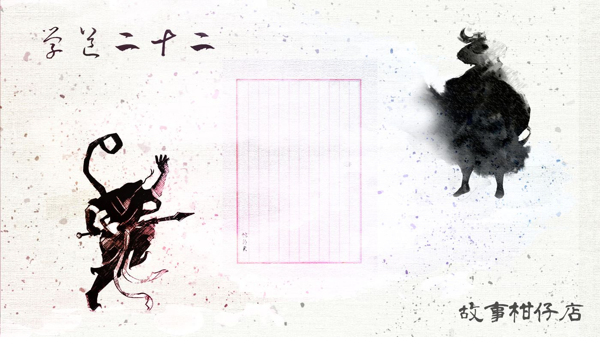
長篇連載｜玄墨行者 ──學道(二十二)｜默安】
拾兒愈來愈迷糊了，他搞不懂，師父幹嘛要他翻山越嶺來找土地公。
還來不及開口問，倒是土地公像是想起什麼，先開了口：「啊！你來得正好啦，你師父一堆信積在我這，拿去拿去。」
邊說著，土地公便彎腰從小廟神像後取出一疊寄給天璣的信件。
「你師父真不是款，每次都把我當郵差，他們要聯絡都把信往我這寄。」土地公不知從哪裡變出條抹布，蹲了下來擦著他的老迪爵。
這是什麼意思？「他們」是誰？師父究竟和誰偷偷聯絡？為什麼要用這種方式？
「我跟你師父老交情了啦，他在搞什麼我都知道。老朋友，稍微幫忙哪有啥。」
原來，天璣定期都有與一位神秘客聯絡，但似乎必須瞞著師兄弟，於是每當兩人要聯絡時，就會將信寄來這座小廟，再各自來取信。
「你看，昨天還來一封，看來對方還不知道你師父挫起來了，有夠撥接。」
「那對方到底是誰嘛？」拾兒感覺血壓正在衝高，這歐吉桑講話都不趕快講重點！
「我不知道。」土地公手肘撞了撞拾兒，「你有夠憨，信就在這，拆開來看麥啊！」
禁不住慫恿，拾兒快手拆了信，土色草紙卻是一個字、一個符號、一個數字都沒有，像一片乾乾淨淨未插秧的田。
無論是對著日頭看、噴了水、撒上土，甚至讓麻雀來啄，草紙仍然無動於衷。
「他們一定用約定好的保密機制啦，別人看不到的。」土地公很沉痛搖搖頭，「所以齁，我也沒偷拆過信。」
他梳得服服貼貼的頭髮，突然掉了兩撮到額前，他連忙掏出胸前口袋的排梳，重新梳好頭髮。
誰問你這個了……。拾兒有點不耐煩，繼續追問：「你說跟我師父是老交情，為什麼我從沒聽他提過你？為什麼我師父會突然死了？」
土地公意氣風發抖了下花襯衫領子，顧左右而言他：「玄天璣再能幹，終究是人，有些事情喔，還是要靠我們神明啦。知否？」
拾兒想起蒙叟透露的，師父用自己的方式盡力維護三界和諧。身為他的傳人，居然一無所知。不，即使是其餘六者，應該也都不曉得吧。
一隻小蟲慢吞吞爬過，一寸一寸往水田前進。拾兒心底突然一陣悲哀，師父該有多孤獨啊？
他一直以為師父無堅不摧，因為師父的心是軟的，心軟之人，才能挺過種種磨礪。但想起師父死前那消瘦如紙的模樣，他不免開始懷疑。
見拾兒不語，土地公搖搖信封，「新天璣，不知道信寫啥，至少看得到寄件地址齁！」
拾兒大夢初醒，慌慌查看，果然一整疊信都來自同一個寄件地址。
他感覺全身的血都衝上腦門，立刻就想出發前往，土地公像是看破他心思，撇撇嘴道：「新天璣，做事唔通這麼輕狂，你這回下來是要收妖，不是尋人哪！」
寥寥數語，提醒了拾兒，這趟多虧蒙叟掩護才得以成行，如此一來，他便得先收隻妖交差。但，哪來的妖？
「嘿，別說我不照顧你。」土地公從胸前口袋拈出如毫毛般的棕黑色碎屑，「蜘蛛精的觸鬚，這妖氣夠用了。」
「謝謝你，土地公。」拾兒謹慎收下，突然覺得眼前這油頭歐吉桑其實頗為可親。
「叫我福德哥啦，土地公聽起來有夠老。」
土地公跨上老迪爵，定睛瞧了瞧儀表板，頭也不抬地說：「有人起疑了，你得先回山上。呷緊會弄破碗，知否？」
有人？是誰？拾兒滿腹疑問，卻也沒有問出口。因為終於漸漸明白，很多答案都是問不出來的。他只得點點頭，重新整裝，準備返回孤峰。
正要轉身，袖子卻被土地公一把拉住。
「這件衫，是你師父的吧？」
拾兒點頭。
「你師父當初幫你做新衫時，多歡喜啊，還帶來跟我說『這是要給我徒弟的，小伙子比我壯多囉！』認識他這麼久，很少看他那樣歡喜。」
面前一整片水田，有飛鳥低低掠過，背著光，像剪影。
他必須走了。收妥那一疊信，臨走之前，他才正式自我介紹：
「福德哥，以後叫我拾兒就好。天璣，是我師父的名字。」
－－－－－
#新連載依舊兩天一篇每晚準時六點半喔
#請人客多多指教
#記得去各大書店買我們的書故事柑仔店哩
玄墨行者．學道（二十三）：尋人啟事
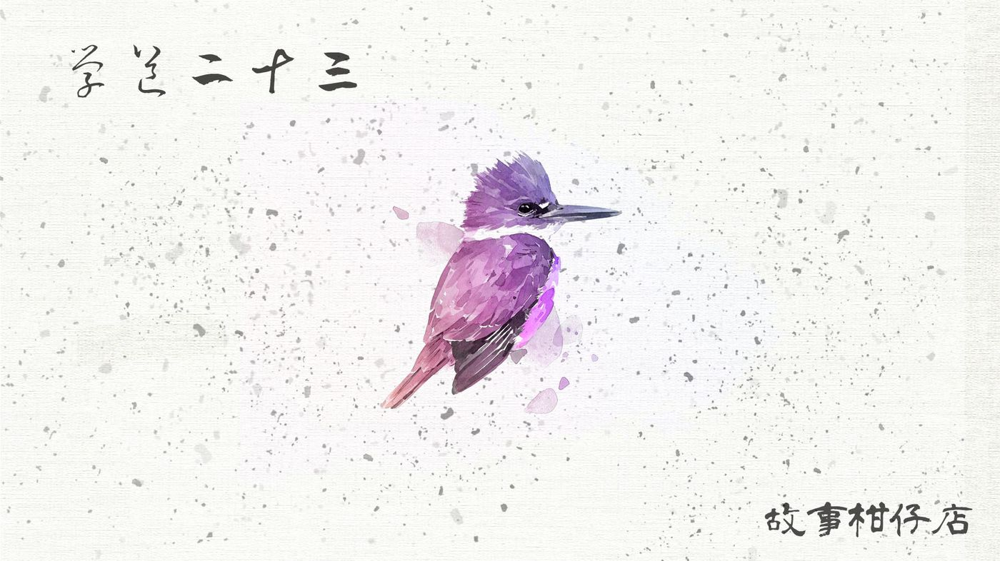
入夜時分，山上下起了雨，打亂了林中如鏡的湖面，雜草被雨水踏彎了腰，滂沱雨勢織成一匹白茫茫的布，罩住了天地。
孤峰裡是聽不見雨聲的，即使聽見，山壁也濾掉雷霆萬鈞的戾氣，徒留沙沙的、綿綿的背景音。
大夥早早就睡了，包括拾兒。他很慶幸自己早一步歸山，免受大雨淋落。更慶幸的是，憑著福德哥給的一小撮蜘蛛觸鬚，真的讓他首度製作的替身，通過了天樞比刀還銳利的雙眼，順利交差。
也許是鬆了一大口氣吧，拾兒睡得特別沉，鼾聲連天。
夜已深，卻也不是所有人都睡下了。天璇就在自己的廂房裡，就著燭光，弓著身不知忙些什麼。
燭光搖曳，室內影塊跟著晃悠起來，天璇拿著一把刨刀，將木片削去一層又一層。
他拈起隻極小的木鳥對著燭火，那雙翅部分的木片竟薄得透光，柔軟如雪花。天璇睜大了眼，配上暴突的方硬腮骨，在昏黃燈光下儼然就像隻憤怒的青蛙。
事情未完。天璇搓了兩顆如芝麻大小的圓球，綴在木片上，木鳥於是有了眼。
他低低念詞，劍指往木鳥揮毫幾筆，「呼」地吹口氣，那隻木鳥竟如有了生命似的翩翩飛舞。
天璇很滿意。下次肯定能派上用場。不，也許明天就用得上了。
想到這他莫名興奮。老早他就懷疑老三跟妖界暗通款曲，誰知還沒查出個水落石出，老三就這麼死了。甭說蒙叟了，拾兒一上位就急著派他出去收妖？才剛回來屁股還沒坐熱呢，今晚居然要他明日出門。
老三生前是最常被蒙叟派下去的，這兩人有些勾結也不意外，照這情勢看來，拾兒連他師父幹的骯髒事恐怕也一併學全了吧。
蒙叟他是動不了的，但拾兒破綻就多了，還未學得他師父老謀深算哪！
木鳥繞了廂房飛行三周，又翩翩降落在天璇掌上。
天未亮，拾兒便精神抖擻準備出門，虹月正煮早餐，招呼他吃點，他噘著嘴說：「我要去吃炒麵和豬血湯！妳乖乖的吃白粥吧妳！」
說完，便興起來了兩個側手翻，還順勢躲過虹月射來的一根柴。
直到離孤峰有段距離了，拾兒才敢掏出口袋裡寄給師父的最近一封信。默念了幾次住址，翻了山越了嶺，按照福德哥的提醒，搭上一班往市區的客運，在一處並不擁擠的的街道下了車。
「這麼近啊？太好了。」拾兒咕噥著，他漸漸有點了解怎麼用手機看地圖，還能估算腳程呢，太方便了，雖然他自認永遠能走得更快。
雖是心急如焚，但他仍舊找了間小攤點了炒麵和豬血湯，跟著隔壁桌的人澆上海量的東泉辣椒醬，唏哩呼嚕吃完，打個飽嗝，繼續上路。
走著走著，看見一間建築外竟排滿人潮，走出來的人手上無一不捧著杯東西吃得津津有味。拾兒決定也排隊，才看清這棟樓叫甚麼宮原眼科。
嚐到那玩意兒，拾兒很驚訝，這世界上居然有比師父買的蛋塔跟布朗尼還好吃的東西，人們稱它為冰淇淋。他希望有朝一日也讓虹月吃上一球。
雙手往褲子上抹了抹，拾兒穿過小巷，面向一整排燈光敞亮的店家。
他再掏出信封，細細比對著門牌號碼，這才發現寄件地址居然是藥妝店、手搖店、速食店中間，夾著的一小間灰撲撲的老舊中藥行。奇怪的是，熙來攘往的行人似乎都沒意識到中藥行的存在，連看都不看一眼。
「哇靠，難道師父得了不治之症？」千百種想像在拾兒心頭繞來轉去，他決定，先去買一杯手搖冷靜一下，演練該如何自我介紹。
捧著大杯全糖正常冰珍奶，拾兒推開藥行泛黃的玻璃門，一陣藥草香撲鼻而來，櫃檯後的老闆倏地轉過身來，收著下巴，一雙眼直勾勾打量拾兒，圓眼鏡都快滑到鼻翼上了。
老闆推了下眼鏡，問：「買什麼？」說完，居然迅速吐了幾下舌頭。
不是吧，這老頭吐什麼舌啊？師父都跟些什麼人來往啊？
強壓心中疑惑，拾兒乾脆直球對決，將那信封放在櫃台上，「這封信你寄的？你認識我師父玄天璣？」
老闆眼珠轉了轉，舌頭又不自覺往外吐了幾下，下巴收得更低，警戒的盯著拾兒。
正當拾兒發現老闆的舌尖是分岔的，老闆卻轉過身去，倒了一杯熱騰騰的茶遞過來，說：「甜飲傷脾，喝這個吧。」
一杯茶，還不知道該不該喝，泛黃的玻璃門卻自顧自喀啦上了鎖，然而有一隻木鳥卻悄悄地從門縫鑽了進來，靜靜地貼伏在漆落斑駁的天花板。
－－－－－
#新連載依舊兩天一篇每晚準時六點半喔
#請人客多多指教
#記得去各大書店買我們的書故事柑仔店哩
玄墨行者．學道（二十四）：天王補心丹
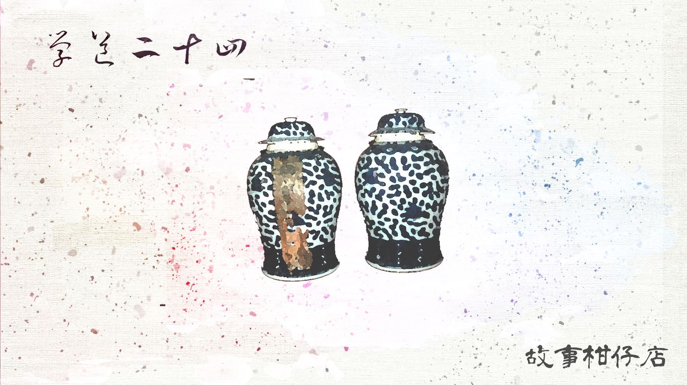
「我走得滿頭大汗還要我喝熱茶？」拾兒挑釁似的吸了一大口珍奶，嚼得十分來勁。
老闆右手忽而翻飛而來，一下就扣住拾兒手腕，兩人不約而同露出驚詫表情。老闆很快恢復神色，指尖倚著拾兒脈搏，道：「脈細濡緩，舌苔白膩，肝火旺盛，還敢喝？」
透過指尖，拾兒感受到老闆冰涼的體溫，那不似人。
「我來不是喝茶的。」拾兒開門見山，指頭抵著信封，「你是誰？找我師父做什麼？」
「那你又是誰？闖進我店裡說些不著邊際的話。」老闆的金框圓眼鏡壓在鼻翼上，原來他的鼻樑幾乎跟馬路一樣平。
「我是他徒弟，他死了，我正在查明原因。」拾兒揚起下巴，一頭捲髮張揚飛起。
老闆定格了幾秒，再問：「信哪來的？」
「福德哥……土地公給的。」
至此，老闆態度似有軟化，他背對拾兒，拉開百草櫃抽屜翻來覆去，不知找些什麼。接著丟出一袋藥錠，冷不防說：「天璣心臟不好，你知道嗎？」
「肯定是鯤精搞的鬼！」老闆忿忿地說，不忘吐吐舌頭。
像是打開了話匣子，他說起十七年前玄墨一門趕盡殺絕一役，誰不好殺，偏偏殺了鯤精弟弟。鯤精兄弟修行千百年，法術高明，德高望重，也因此，牠倆擁有維護妖界秩序的能力。
「鯤精弟弟被殺之後，我耳聞哥哥去找過天璣……，從那天起，天璣就變得怪怪的，時常心臟不舒服。有次來我這打瞌睡，說夢話哩！喊著『十八、十八』，說不定是鯤精哥威脅他十八年後要來索命！」
老闆連珠砲似說完，翻弄起那些土色藥錠，面露傷感：「天璣常來我這拿天王補心丹，他不敢吞藥粉，我還特製藥丸呢……他怎麼死的？」
「睡夢中去的。」
「你說一個壯年人怎麼沒外傷沒病沒痛就這樣去了？肯定是妖怪索命。」老闆雙手抱胸，眼鏡仍舊懶洋洋搭在鼻翼上。
雖然聽得一知半解，但拾兒胸膛卻熱了起來，彷彿在五里霧中看到一絲光線，他急急追問：「那鯤精人呢？我要去找他算帳！」
「不知道。」老闆這次倒是答得乾脆。
嗄？拾兒撐著下巴的手滑了一下，這傢伙講了那麼多，現在卻說不知道鯤精去向？
「你耍我？」
他一把揪住老闆衣領，豈料老闆瞳孔突然閃了一下，一條岔成燕尾的舌頭又吐了出來，脖子一扭，立刻掙脫。
「鯤可是一隻大鯨魚啊！這裡四面環海，祂想去哪都成，你以為我故意隱瞞嗎？我要是這種小人，天璣豈會跟我合作這麼久！」
氣氛突然降到冰點，拾兒撇開眼神，一口喝掉老闆準備的茶。茶已冷卻，酸苦挾甘，味薄韻厚，滑進腹肚，只覺神清氣爽，耳聰目明。
這一喝，胸口那把火清涼了些，拾兒訥訥問：「那，你急著找師父什麼事？我看福德哥那裡好多信。既然這麼急，幹嘛不直接聯絡師父？」
老闆自顧自捏著秤桿，獨活、茯苓、甘草、芍藥，一一細秤後，分別放上包藥紙，慢條斯理地摺、壓、塞，變出二十一個大小一致的藥包。
「你是真傻還是假傻？居然要我直接聯絡天璣？」
「我說這話有什麼不對嗎？」拾兒有點惱了，這老闆講話非得這般閃爍又挖苦？
老闆不語，逕自轉身盯著櫃子頂端一排藥罐瞧，揮揮手。百草櫃高，藥罐幾乎要貼著天花板，豈是伸手可及。
忽然，老闆身體居然就這麼扶搖而上，視線與那排藥罐平行，悠哉悠哉地揀藥材。
一見此景，拾兒驚呆了。老闆寬鬆polo衫底下可不是一雙腿，而是粗如樹幹的圓柱身軀，佈滿青藍色鱗片。
「這下懂了？你說我怎能直接找上天璣？」老闆突然將那張架著眼鏡的扁臉湊到拾兒面前，嘶嘶吐著舌頭。
往櫃檯裡探去，那圓長身驅竟繞了好幾個圈，鱗片溼滑，晶瑩透光，看上去就是一支超巨大的霜淇淋。
拾兒狠狠倒抽一口氣。自己著實太大意了，居然沒意識到老闆是蛇妖！還是超巨型蟒蛇！難怪他與師父聯繫得這麼麻煩，畢竟玄墨一門嚴禁與妖私下往來，違者一律逐出師門。
那麼，師父究竟為什麼甘冒風險，也要與蛇妖往來？
－－－－－
#新連載依舊兩天一篇每晚準時六點半喔
#請人客多多指教
#記得去各大書店買我們的書故事柑仔店哩
玄墨行者．學道（二十五）：蛇郎君
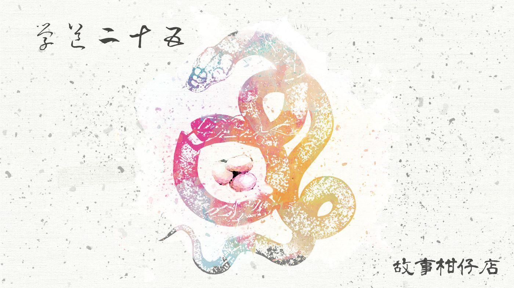
長篇連載｜玄墨行者 ──學道(二十五)｜默安】
「你可以叫我青爺，是你們這些玄道術士口中的蛇妖，有人叫我蛇郎君，正確來說我們是蛇精一族，不是甚麼來路不明的妖邪。」老闆義正嚴詞地糾正。
他替自己斟了杯冷茶，摘掉眼鏡隨手放在櫃台上，本就老舊陰冷的中藥行，突然悄悄染上一層暈黃斑駁的色彩。青爺捏捏著扁塌鼻樑，很疲憊似的，緩緩說起他與天璣的陳年往事。
「你師父，本來是有爸媽的。」青爺的聲音像一縷煙，燻得人淚汪汪。
然而七歲那年某一天全家開車出遊，山間碰上妖物作祟，車子衝撞護欄跌落山谷，父母當場身亡，他滿身是血爬出車窗，拽著草根凸石，迷迷糊糊爬到馬路求救，從此成為孤兒。玄墨一門遂將他帶回山中撫養，栽培為傳人。
他滿心憤恨，只想殺，殺光所有禍害人間的妖；心想總有一天能殺到那個禍害父母，使自己成為孤兒的妖。
正式成為「玄天璣」之後，他的醉妖弦更染遍妖物精怪之血，琴音一出如秋風颯颯，鬼妖都驚，甚至連不慎聽到的人都會心生恐懼，全身顫抖。
某日，他接收蒙叟指示，來到一座村落收妖，只見稻央折損、苗木摧毀，且雞群猝死，雞蛋全數不翼而飛，甚至貓狗失蹤，家戶小兒受驚失魂。
天璣用琴聲逼出兩條粗如樑柱、身長逾八十呎的巨蟒。他繃弦割斷其中一尾的頭，倖存一蛇則蜿蜒逃進山野荒地，神出鬼沒，見首不見尾。
天璣見牠狡詐，遂採遠身攻擊，刮弦剔怨，琴音如子彈粒粒貫穿巨蟒腦袋，噴出一地血污，吐出貓狗遺骸。
蟒妖斃命，天璣沿其滾圓身軀深入林深不知處，赫然看見巨蟒尾端繞成一圈，圈中蛇蛋數顆，其一蛋殼正悄然龜裂，小蛇艱難探出頭嘶嘶吐信，無邪如雛鳥，未能明白何謂死亡。
天璣恍然大悟，蟒妖並非惡意作祟，而是幼蛇孵化在即，所以牠們不顧結界，直闖人類領地急急存糧。
那尾小蛇滑溜地闖出蛋殼，全身佈滿黏液，牠搖頭擺尾，似在吆喝手足出生。天機想著被自己割首破顱的蛇精夫婦，心中一震，手上醉妖弦墜地，眼前閃過父母滿面鮮血的樣子，就這樣呆了半响。
這是天璣入玄墨一門後，第一次未斬草除根。
經此一役，回到孤峰的天璣將自己反鎖在內堂七天七夜，凝觀宗譜，求諸乾坤，終於參悟祖師教誨：維護三界平和，首要得停止無謂殺戮。
「等等，你該不會就是那條小蛇吧？」拾兒忍不住打斷。
「不行嗎？」青爺一臉不悅。
「你看起來比我師父臭老很多耶！怎麼可能是他救的小蛇！」
「我也沒說我就是啊。」青爺瞪了一眼，「我是那條小蛇的舅舅。」
那條護蛋母蛇，便是青爺的妹妹。聽聞妹妹慘死，青爺號召部族要取天璣性命，豈知天璣竟搶先來到聚落賠禮，承認自己不該弄清來龍去脈之前便痛下殺手，同時，也為自己悟到的教誨，希望與妖界重新連繫。
「簡單來說，從那天起，我就成為天璣妖界的線人。妖界有什麼騷動，我就會通知他盡快處理，避免他師兄弟開殺戒。」青爺以此總結。
「嗄？你就這樣原諒了師父的殺妹之仇？？」拾兒不敢置信。
「『仇』這個字，沒你想像得那麼簡單。」青爺戴上眼鏡，嘶嘶吐信，「有時候你以為的仇人，可能是最能幫助你的人。」
拾兒忍住白眼，他來可不是為了聽這種靜思語。青爺告訴他，前三、四個月，牠發現結界法力漸弱，開始發生人類越界踩踏妖族領地，或者妖族侵擾人類等情事，於是牠才急急去信七、八封通知天璣，卻未見回覆。
三、四個月前？拾兒回想，那不就是自己通過成年禮後，師父緊鑼密鼓訓練的階段嗎？那段時間師父根本沒下山，難怪青爺等不著。
「哪。」青爺抽出最左邊的一格藥櫃，往抽屜深處摸了摸，搜出一張泛黃紙頁攤在櫃台上，「這是台灣各大妖族聚落的地圖，給你參考。」
「給我幹嘛？」
「你替了天璣的位，就該傳承他的責任啊！現在結界法力漸弱，我擔心日後釀成大禍，如有個萬一，你也好趕赴現場幫幫手，不然你那些個師叔門來了，免不了又是一場妖界浩劫。」
「我做了，有什麼好處？」拾兒雙手抱胸，一臉不屑，即使他心中早已萬馬奔騰要接手天璣志業，但總不好如此形於色。
「說不定你能順道打聽到鯤精的消息。這算好處嗎？」
青爺與拾兒沉默對看二十秒，拾兒一把將地圖塞進口袋，口是心非，「好啦好啦，根本沒有選擇的餘地嘛！」
「聯絡方式不變，我們就透過福德聯絡。」青爺取出一張白紙，命拾兒滴血其上。
拾兒滿頭問號，仍咬破了拇指，血珠一觸及紙張，如螞蟻般密密麻麻的字便浮現出來。
「信件只要抹上我的鱗片磨成的粉，就什麼也看不到，除非滴上你的血。」
「這是我與你師父的一起下的契約，現在換你背了。」青爺慢悠悠地望向門外。
－－－－－
#新連載依舊兩天一篇每晚準時六點半喔
#請人客多多指教
#記得去各大書店買我們的書故事柑仔店哩
玄墨行者．學道（二十六）：告密者
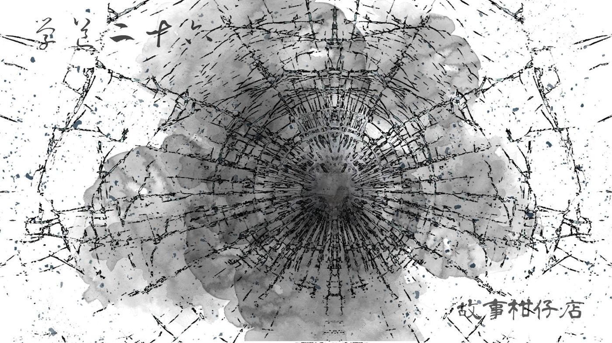
木鳥攀在青爺的藥行天花板角落，兩隻黑漆漆眼珠俯視著藥行一切，看見青爺頭頂有點稀疏，拾兒的腳有時會不自覺打起規律的拍子。
所有動靜，包括拾兒尷尬喝下熱茶、青爺現形……在天璇的手機分秒不差的播放著。
一場師死徒繼、歃血為盟的感人戲碼。天璇心想，幸虧他精通機關術手又巧，首次嘗試將鏡頭鑲在木鳥身上，再傳送至手機，沒有任何事情可以瞞過他。
雖然聲音沒有錄到，但這也夠了。這些畫面足以證明，拾兒與妖界私下往來。幸虧發現得早，儘早將他逐出師門，才能避免養虎為患。
他揚起頭，激動地閉上眼睛，昏黃小燈照耀下，他掩面大笑，彷若幹了比殺妖更快活的事。
一週後，在山下的開陽、瑤光被天樞召了回來，說有要緊事宣佈。
「又有什麼事呀？」虹月偷偷問。
「呿，能有什麼要緊事？訓訓話罷了。」拾兒毫不在乎，打從自青爺藥行離開後，他對所有事都不上心，一意想著溜下山開始師父未完的志業。
既然是要緊事，還沒通過成年禮的虹月自然又被擋在門外了，她嘟著嘴，目送拾兒及大曲開了石門，走了進去。
她強作無事，自個兒到孤峰外練跳繩，氣息勻律，繩子鞭擊地面的聲音凌厲挾風，讓她無端覺得再跳也無濟於事，但放眼望去那片空寂山谷，她似乎也只能繼續。
內堂倒就沒有那麼平靜了。
大家才剛入坐，天璇便按耐不住地咬牙切齒，「有人暗通妖類，圖謀不軌！」
天樞接棒，娓娓道出拾兒與蛇精私通之事。
「你才剛上位，就與妖界互通，想來你是有跡可循？」天樞話中有話，他看死這絕對與死去的天璣有關。
「我聽不懂。」拾兒雙手抱胸，十足無賴。
「師兄，會不會搞錯啦？咱們下山收妖，與妖界接觸是常有的事嘛！」瑤光緩頰，卻遭天璇銳利一瞪。
「我們是殺妖除妖，可沒聽過和妖對坐飲茶的！」天璇手機往桌面一丟，螢幕上播出拾兒在青爺藥行的一舉一動。
拾兒全身的血液都凍住了。他不明白何時被錄下這些畫面。難道是青爺出賣了他？
「罪證確鑿，還有什麼話好說？」天樞厲聲問道。大曲在旁悶不吭聲，只覺師父髮絲又白了一些，都怪拾兒，老是捅簍子。
「我身體不舒服去抓帖中藥也不行？老闆是妖又怎麼？他可沒作亂，老老實實做生意，我犯得著擾他？」拾兒豁出去了。
「按這說法，是湊巧囉？」天璇斜著眼，「初次見面，你拿信封、他取紙，這不明擺了你倆早已認識！」
「欺師滅祖的東西。」天樞氣到臉都發白了，藏在鬍髭下的薄唇也泛著淡紫，「私下與妖族私通者，誰都容不得你，馬上給我滾！」
開陽趕緊說道：「師哥，這事沒這麼嚴重吧？拾兒剛上位，有些事還不明白，知錯能改嘛。」
「要改什麼？我又沒有錯。蛇妖老闆真的就是老實做生意啊！他開的藥很管用呢，要不要介紹師伯們去退火？」拾兒不領情，一頭散亂捲髮，加上婆娑鳥一役留下的破相傷疤，讓他整個人看來更加桀驁。
「無恥！你究竟收了妖族多少好處？這麼幫襯牠們？」天璇拍桌大罵。
「師哥，我對拾兒私通之事沒有疑議，但有一問。」寡言的天權緩緩舉起手，神秘地壓制了嘈雜的氣氛。他眉心間的大痣像第三隻眼，跟著雙眼掃視周遭一圈。
「與妖族私通者，逐出師門，祖師有傳下這個規矩嗎？我記得《玄墨宗譜》並無記載。」天權問。
「祖師要我們護人，不是護妖，陣前通敵，大逆不道，難道要留著他等我們玄墨全都被妖所殺？」天樞倏地抽出七星劍劃個半圓，劍指拾兒鼻尖：
「走，現在就走！」
－－－－－
#新連載依舊兩天一篇每晚準時六點半喔
#請人客多多指教
#記得去各大書店買我們的書故事柑仔店哩
玄墨行者．學道（二十七）：臥底

這是一個晨曦透過林葉灑落的早晨，很遠很遠的天際有禽鳥的啼叫，聲音落進山谷，漸漸消失無蹤。
孤峰從沒那麼安靜過。虹月心想。是拾兒不在的關係吧。
三天前，她還正跳著繩呢，拾兒走了出來，將包包甩在肩上，臉一揚，「我走了！」左眼那道疤，讓他的臉更加殘破。
還搞不清楚怎麼回事，拾兒已經消失在林中。
當天晚餐時分，氣氛特別奇怪。平素最愛開玩笑的六師叔一語不發，七師叔怯怯地說：「師哥，讓拾兒回來吧，給他個教訓就夠……」
話還沒說完，天樞重重放下碗筷，拂袖而去。收拾餐桌時，虹月才發現筷子裂開了。
她憋著滿肚子疑問，好不容易捱到回廂房，纏著玉衡問究竟發生什麼事。
玉衡一說，虹月便急得淚眼汪汪，「師父，您沒有替拾兒說話嗎？」
玉衡沈默了。會議上，連天權都出聲了，唯獨她未吐隻字片語，卻在刀光劍影中異常思念天璣。
拾兒承了天璣的慈，不趕盡殺絕，卻又比天璣更反骨。看他一頭張揚的捲髮便知道了，性倔脾硬；那張臉又破了相，非得入塵世滾過一輪不可。
如果天璣還在，他會怎麼做？
一思及此，原本要替拾兒說情的嘴又抿住了。她眼睜睜看著拾兒抬頭挺胸站了起來，毫不畏懼地面向七星劍，面向天樞，然後轉過頭，大跨步走出內堂。
她不知道該怎麼向虹月解釋自己的心思，隔著層肚皮，終究是有些隔閡。只開著小夜燈的廂房裡，暈暈黃黃，虹月臉上那一大片胎記也被黃光抹了去似的，一派清麗，卻含著兩泡淚，不敢落下。
玉衡從矮桌上的鏡子瞧見自己，這等昏黃竟也遮不住兩鬢叢生的白髮。
「虹月，妳想去找拾兒對吧？」
虹月沒有作聲，只是一對鹿一般的眼睛驚異地看著玉衡。
看到那樣的表情，玉衡便了然於心。
她安撫虹月先睡下，自己輾轉一夜。恍惚有夢，彷彿看見天璣笑盈盈走來，她伸手，天璣只是搖搖頭，身影漸散。
當夜，不只這廂房騷動難靜，另一頭的廂房也暗潮洶湧。
大曲替師父鋪好了床，天樞和衣，露出嶙峋背脊，沿著脊椎有一道宛如山脈隆起的深紫凸疤。即使不是第一次見到，大曲仍覺怵目驚心。
「拾兒被逐出師門，你有何看法？」很難得的，這夜天樞竟開了話題。
大曲嘴上說，他私通妖族，罪有應得。可不知道為什麼，他心中有一絲絲愉快之情。
「玄墨七者不能少。你得準備準備。」
說完，天樞便睡下了。這下子，換大曲睡不著了。
他不明白師父的意思，或者是，不敢明白。難道師父要他頂替拾兒的位置嗎？若真是如此，那他豈不成了替代品？可轉念一想，倘若照規矩來，他得撐多久才能上位？
大曲側著身，聽得見自己突突的心跳，弄不清是興奮，或是擔憂。
隔天晌午，蒙叟竟傳了虹月。按理說，未過成年禮，是不能接派任務的。為秉公正，蒙叟特地要天樞同行作證。
這實在是破天荒的事，大夥兒聚在內堂，開陽還作態貼耳蒙叟廂房偷聽，忽然門開，虹月低著頭隨著天樞走了出來。
天樞臉上的神色說不清是什麼，像一團灰，像一團來不及理清的迷霧。他理理衣襟，向大家宣布：預天儀顯示山下某處有隱約妖氣，恐怕是新妖族正在孕育茁壯，蒙叟指派虹月前往該地常駐，監看動靜。一來是為了成年禮做準備，二來則是因為玄墨人手吃緊，不可能派出七者之一常駐該地。
大夥靜靜聽完，瑤光率先發難：「這行嗎？虹月還沒成年，豈不太危險？」
天璇睨他一眼，道：「入了玄墨門，還能怕危險？」
開陽說：「拾兒剛走，虹月又要去當臥底，山上愈來愈冷清啦！」
所有人你一言我一語，沒發現玉衡與虹月只是靜靜的低著頭，不看對方。
－－－－－
#新連載依舊兩天一篇每晚準時六點半喔
#請人客多多指教
#記得去各大書店買我們的書故事柑仔店哩
玄墨行者．學道（二十八）：下山

廂房裡，玉衡及虹月默默無語，背對背各自收拾東西。
玉衡面牆，虹月面門，手裡忙活，心裡千千結。
「師父……」
「下了山可不比山上，要好好照顧自己。」
玉衡打斷了虹月的話，她太知道徒兒要問什麼，乾脆搶先不讓她問。
虹月心性聰穎，恐怕已經猜到了：蒙叟的指派，是玉衡央來的。
那晚玉衡輾轉一夜，想著如何讓虹月下山而不遭師兄弟起疑，唯一辦法，便是讓蒙叟說話。
可蒙叟會答應嗎？玉衡不確定。蒙叟之於她，就是個瘋瘋癲癲的老人，要誰下山就誰下山，誰收妖就誰收妖。唯一特別的是，他似乎與天璣特別聊得來，過去天璣進了廂房，沒有一時半刻不會出來。
也許蒙叟是個明理人。
別無他法，天才矇矇亮，玉衡便悄悄入了內堂，叩門進廂房時，蒙叟一腳曲起身軀斜臥，彷彿早已做好準備。
「我說喲，妳是捨不得徒弟吃同樣的苦，還是要她去圓滿妳的遺憾？」
都還沒說明來意呢，蒙叟突如其來一句話，卻刺得玉衡發痛。
她環視四面石壁的廂房，還有那座巨大的預天儀，說沒有恨是騙人的。
她曾想過，若不是在這裡，若不是身負收妖使命，也許跟天璣有不一樣的結局。但，與天璣最快樂的記憶，也都在這裡了。
不能離開，也離不開了。
於是那天，她不替拾兒說話，就是為了讓他下山。或許在那一刻，她已經決定，要助虹月也離開這裡，受傷也好，孤獨也好，總之別將一生葬在孤峰。
只是她也說不清，究竟是為了虹月，還是為了自己。
「看來妳想清楚了。稍晚我會傳虹月，妳回去吧。」蒙叟又自顧自下了決定。
事情出乎意料的順利，連天璇也沒多說什麼，恐怕是沒人敢質疑蒙叟吧。
虹月整理了一小包細軟，玉衡看了不免心疼，這樣花樣年華的女孩，也沒幾件好看衣裳。
「收著，妳六師叔、七師叔送的。」
虹月接過，是一部智慧型手機，裏頭已經輸入了玄墨一門的聯絡人，當然也包含了拾兒。多虧開陽手腳快，趁著拾兒下山前，問了他的LINE ID。
玉衡又塞了一小捲鈔票到虹月口袋裡，「下山去買喜歡的衣服，吃點好吃的。」
她雙手捧著虹月的臉龐，眼眶含淚。
這樣一個聰穎貼心的女孩，容貌清麗卻玩笑似的長了塊大胎記，讓玉衡特別心疼她，隔著層肚皮又怎麼著？十多年來，她難道不是真真切切將虹月當作親出的嗎？
虹月眼淚先滾了出來，搖搖頭，搖亂烏黑髮絲，口齒不清：「我不想走了，師父。」
「妳能走，也該走。以前沒來得及有的，往後就能有了。」語焉不詳，虹月聽得似懂非懂。
此行既是蹲點當臥底，理當更加小心，蒙叟特意為虹月揀了個月明星稀的三更時分，出孤峰。
其他人都睡了，只有玉衡、開陽、瑤光聚在外廳送虹月。
「有任何問題就找我們，反正我們常在山下，別客氣。」開陽交代。
虹月乖巧點頭，背起行囊，轉身要走時，好像看見大曲偷偷從房內探頭出來目送她。
月光沖得她一身銀波。難為她這般潔淨身軀，竟也要往俗世裡滾上一回了。
－－－－－
#新連載依舊兩天一篇每晚準時六點半喔
#請人客多多指教
#記得去各大書店買我們的書故事柑仔店哩